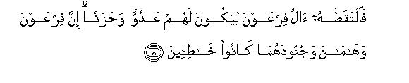
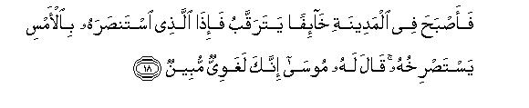

بسم الله الرحمن الرحيم
Sayyid Abul Ala Maududi - Tafhim al-Qur'an - The Meaning of the Qur'an
 28.
Surah Al Qasas (The Story)
28.
Surah Al Qasas (The Story)
The Surah takes its name from verse 25 in which the word Al-Qasas occurs. Lexically, qasas means to relate events in their proper sequence. Thus, from the viewpoint of the meaning too, this word can be a suitable title for this Surah, for in it the detailed story of the Prophet Moses has been related.
As already mentioned in the introduction to Surah An Naml, according to Ibn Abbas and Jabir bin Zaid, Surahs Ash-Shu`araa', An-Naml and Al- Qasas were sent down one after the other. The language, the style and the theme also show that the period of the revelation of these three Surahs is nearly the same. Another reason for their lose resemblance is that the different parts of the Prophet Moses story as mentioned in these surahs together make up a complete story. In Surah Ash Shu`araa', excusing himself for not accepting the office of Prophethood the Prophet Moses submits, "The people of Pharaoh have the charge of a crime against me; therefore, I fear that they will put me to death." Then, when lie goes before Pharaoh, the latter says, "Did we not bring you up as a child in our house? You lived quite a few years of your life among us, and then you did what you did." Nothing more of this has been mentioned there, but in this Surah the other details have been supplied. Similarly, in Surah An-Naml the story starts abruptly from the time when the Prophet Moses was journeying with his family and suddenly saw a fire at a distance. In that Surah nothing has been said about the nature of his journey, or the place he was coming from, or his destination, but this Surah supplies all the necessary details. Thus, the three Surahs read together complete the story of the Prophet Moses (Allah's peace be upon him).
The main theme is to remove the doubts and objections that were being raised against the Prophethood of the Holy Prophet Muhammad (upon whom be Allah's peace and blessings) and to invalidate the excuses which were being offered for not believing in him.
For this purpose, first the story of the Prophet Moses has been related, which, by analogy with the period of revelation, impresses the following points in the listeners mind automatically:
First, Allah provides the means and motives of whatever He wills to do, in imperceptible ways. Thus, Allah so arranged things that the child through whom Pharaoh had to be removed from power, was bred and brought up in his own house, and he could not know whom he was fostering. Who can then fight God and frustrate Him by his machinations.
Secondly, Prophethood is not granted to a person amid festivities by issuing a proclamation from the earth and heavens. You wonder how Muhammad (upon whom be Allah's peace) has been blessed with Prophethood unexpectedly, all of a sudden, but Moses whom you yourselves acknowledge as a Prophet (v. 48) had also become a Prophet unexpectedly, while on a journey, and nobody had known what event had occurred in the desolation at the foot of Mt. Sinai. Even Moses himself did not know a moment before what he was going to be blessed with. He, in fact, had gone to bring a piece of the fire but had returned with the gift of Prophethood.
Thirdly, the person from whom Allah wants to take some service comes out without any army and armor and without an apparent helper or force at his back, yet he puts to rout much stronger and better equipped opponents. The contrast that existed between the strengths of Moses (peace be upon him) and Pharaoh was much more prominent and glaring than that which existed between Muhammad (peace be upon him) and the quraish; yet the world knows who had come out victorious in the end and who had been routed.
Fourthly, you refer to Moses again and again and say, "Why has Muhammad not been given the same which was given to Moses? i. e. miracles of the staff, the shining hand, etc. as if to suggest that you would readily believe only if you were shown the kind of the miracles that were shown by Moses to Pharaoh. But do you know what sort of response was made by those who were shown those miracles? They had not believed even after seeing the miracles, and had only said, "This is magic", for they were involved in stubbornness and hostility to the Truth. The same malady afflicts you today. Will you believe only when you are slowly the same kind of miracles?Then, do you know what fate the disbelievers had met even after seeing the miracles? They were annihilated by Allah. Do you now wish to meet the same doom by asking for the miracles in your obstinacy?
These were the things which were automatically impressed in the mind of every listener who heard this story in the pagan environment of Makkah, for a similar conflict was going on at that time between the Holy Prophet and disbelievers of Makkah as had already taken place between the Prophet Moses and Pharaoh before. This was the background against which the story of the Prophet Moses was narrated so that a perfect analogy was established automatically in every detail between the conditions prevailing then in Makkah and those existing in the time of the Prophet Moses. Then, from verse 43 onward the discourse turns to the real theme.
In the first place, the narration of a two thousand year old historical event by the Holy Prophet with such accuracy and detail, is presented as a proof of his Prophethood although he was un-lettered and the people of his city and clan knew full well that he had no access to any source of such information as they could point out.
Then the disbelievers of Makkah have been warned and put to shame for an event that occurred in those very days. Some Christians had come to Makkah and embraced Islam when they heard the Qur'an from the Holy Prophet. Instead of learning any lesson from this the Makkans were so upset at this that their leader, Abu Jahl, disgraced those people publicly.
In conclusion, the excuse that the disbelievers put forward for not believing in the Holy Prophet has been dealt with. What they feared was this:"If we give up the polytheistic creed of the Arabs and accept the doctrine of Tauhid instead, this will put an end to our supremacy in the religious, political and economic fields, which, in turn, will destroy our position of the most influential tribe of Arabia and we shall be left with no refuge anywhere in the land." As this was the real motive of the chiefs of the Quraish for their antagonism towards the Truth, and their doubts and objections were only the pretenses, which they invented to deceive the common people, Allah has dealt with these fully till the end of the Surah, considered each aspect of these in a wise manner and offered the remedy for their basic ailment due to which those people judged the Truth and falsehood only from the viewpoint of their worldly interests.

In the name of Allah, the Compassionate, the Merciful.
[1-3] Ta. Sin. Mim. These are the verses of the lucid Book. We narrate to you accurately some of the history of Moses and Pharaoh1 for the benefit of those who believe.2
[4-6] The fact is that Pharaoh adopted an attitude of rebellion in the land3 and divided its dwellers into groups,4 one of which he debased, putting their sons to death, and letting their daughters live:5 indeed he was one of the mischief-makers. And it was Our will to show favor to those who had been oppressed in the land to make them leaders and to make them the heirs,6 to give them power in the land,7 and to show Pharaoh and Haman,8 and their hosts, at their hands, the same which they feared.

[7-9] We9 inspired the mother of Moses, saying, "Suckle him, and when you see any danger for him, cast him into the river, and fear not nor grieve, for We shall restore him to you and shall include him among the Messengers."10 Consequently, Pharaoh's household picked him up (from the river) so that he may become their enema and cause of grief for them.11 Really, Pharaoh and Haman and their hosts were misguided (in their scheming). Pharaoh's wife said (to him), "He is a comfort of the eyes for me and for you! Do not kill him: maybe that he proves useful to us, or we may adopt him as a son."12 And they were unaware (of the ultimate result).
[10-13] On the other hand, the heart of Moses' mother was sorely distressed. She would have disclosed his secret, had We not strengthened her heart so that she might have faith (in Our promise). She said to his sister, "Follow him up." So, she watched him from a distance in a manner that (the enemies) did not notice it.”13 And We had already forbidden the breasts of the nurses for the child.14 (On seeing this) the girl said to them, "Shall I tell you of a house whose people will bring him up for you and look after him well?"15 Thus We restored Moses16 to his mother so that her eyes might be cooled and she might not grieve and she might know that Allah's promise was true.17 But most people do not know this.
[14-17] When Moses had reached his full maturity and become full grown,18 We gave him judgment and knowledge;19 thus do We reward the righteous. (One day) he entered the city at a time when the people were heedless.20 There he saw two men fighting, the one of his own people, the other of his enemies. The one belonging to his own people asked his help against the one belonging to the enemy. Moses gave him a blow21 and killed him. (On seeing what had happened) Moses said, "This is the work of Satan: he is a deadly enemy (of man) and an open misleader."22 Then he said,23 "O my Lord, I have sinned against myself, so forgive me. " So, Allah forgave him: He is the All-Forgiving, the All-Merciful.24 Moses promised, "O my Lord, after this favor that You have shown me,25 I shall never again be a helper of the criminals."26

[18-21] The next morning, as he was walking in a state of fear and caution in the city, suddenly he saw the same man who had asked his help the day before, again calling him for help. Moses said, "You are certainly a misguided man."27 Then, when Moses was about to assault the man, who was their enemy,28 he cried out,29 "O Moses! would you kill me today just as you killed a person yesterday? You certainly wish to become a tyrant in the land and reform nothing." Then, a man came running from the other end of the city;30 who said, "O Moses, the chiefs are holding consultations to kill you, so leave this place: I am your well-wisher." Hearing this, Moses left the place, in a state of fear and, vigilance, and prayed, "O my Lord, save me from the wicked people."
[22-23] (Leaving Egypt) when Moses set his direction towards Madyan31 he said "I expect that my Lord will guide me to the right path."32 And when he arrived at the well of Madyan33 he saw a multitude of people watering their animals and apart from them two women keeping their animals back. Moses asked the women "What is your worry?" They said "We cannot water our animals until these shepherds have taken away their animals; and our father is a very old man."34
[24-25] Hearing this Moses watered their animals for them, then turned and sought a shady place and said, "Lord, I stand in need of any good that You may send down to me." (Not long afterwards) one of the two women came bashfully towards him,35 and said, "My father calls you so that he may reward you for watering our animals for us."36 When Moses went to him and narrated to him his whole story he said, "Have no fear for you have now escaped from the wicked people."
[26-28] One of the two women said to her father, "Dear father, employ this man as a servant, for the best man for you to employ as a servant can be the one who is strong and trustworthy."37 Her father said (to Moses),38 "I wish to give you one of my daughters in marriage provided that you serve me for eight years; and if you wish you may complete ten. I do not want to be harsh to you; if God wills, you will find me a righteous man." Moses replied, "Be it an agreement between me and you. Whichever of the two terms I complete, let there be no injustice to me after that; and Allah is a witness to what we have agreed upon.39

[29-35] When Moses completed the term40 and he was traveling with his family, he saw a fire in the direction of Tur.41 He said to his family, "Stay a while: I have seen a fire: I may bring some information from there, or a burning brand with which you may warm yourselves." When he 'reached there, a voice called out from a tree in the blessed ground42 on the right side43 of the valley: "O Moses, I am Allah, Lord of the universe." And (it was commanded), "Cast down your staff." When Moses saw that the staff was writhing like a snake, he turned about and fled and did not even look behind. (It was said,) "Moses, come back and have no fear: you are quite safe. Put your hand into your bosom: it will come out shining, without any harm to you;44 and fold back your arm to ward off fear.45 These are two clear Signs from your Lord to be shown to Pharaoh and his courtiers: they are very disobedient people indeed."46 Moses submitted, "My Lord, I have killed a man of theirs: I fear that they will put me to death;47 and my brother Aaron is more eloquent of tongue than I, send him with me as a helper so that he may support me; I fear that they will treat me as a liar. " Allah said, "We shall strengthen your hand with your brother and shall give both of you such authority that they will not be able to harm you in any way. With Our Signs you and your followers only shall triumph. "in any way. With Our Signs you and your followers only shall triumph. "in any way. With Our Signs you and your followers only shall triumph."48
[36-37] Then, when Moses came to those people with Our clear Signs, they said"This is nothing but false magic,49 and we have never heard of such things in the time of our forefathers.50 Moses replied, "My Lord is fully aware of the person who has brought guidance from Him and He alone knows who will fare best in the end; the truth is that the unjust never attain true success."51
[38] And Pharaoh said, "O chiefs, I do not know of any other god of yours than myself.52 Burn for me bricks of clay, O Haman, and build me a high tower so that I may climb it to see the God of Moses for I consider him to be an utter liar."53
[39-42] He and his hosts assumed haughtiness in the land unjustly, without any right,54 and they thought they had never to return to Us.55 Consequently, We seized him and his hosts and cast them into the sea.56 Now behold what fate the wicked people met! We made them leaders who invited the people to Hell-fire,57 and on the Day of Resurrection they will not be able to get any help from anywhere. We set a curse to follow them in this world and on the Day of Resurrection, they shall be involved in an awkward predicament.58
[44-47] After We had destroyed the former generations, We gave Moses the Book, which We made a means of enlightenment for the people, and a Guidance and a Mercy, so that they may learn lessons.59 (O Muhammad,) you were not present on the western side60 when We gave Moses the Law, nor were you among the witnesses,61 but after him (until your time) We have raised up many a generation, and a long time has passed over them.62 You were also not present among the Midianites that you might have recited to them Our Revelations,63 but it is We Who are sending to you (this news of that time). And you were also not present at the side of Tur when We had called out (to Moses for the first time), but this is your Lord's Mercy (that you are being given this information64 ) so that you should warn those to whom no warner had come before you:65 may be they take heed. (This We have done) lest, when a calamity befalls them in consequence of their own misdeeds, 'they should say, "Our Lord, had You sent a messenger to us, we would have obeyed Your Revelations and been among the believers."66

[48-51] But when the Truth came to them from Us, they said, "Why has he not been given the same which was given to Moses?"67 Have they not rejected that which had been given to Moses before?68 They said, "Both are works of magic,69 which assist each other." And they said, "We believe in neither." (O Prophet,) say to them, "Well, bring a book from Allah, which may give better guidance than these two, if you are truthful I shall follow the same."70 Now, if they do not meet this demand of yours, you should know that they are, in fact, the followers of their own lusts. And who could go farther astray than the one who follows his own lusts, without guidance from Allah ? Allah does not at all guide such wicked people. And We have conveyed to them the admonition over and over again so that they may take heed.71
[52-56] The people whom We gave the Book before this, believe in this (Qur'an),72 and when it is recited to them, they say, "We have believed in it: this is indeed the Truth from our Lord: we were Muslims even before this."73 These are the people who shall be given their reward twice74 for the fortitude they showed;75 they repel evil with good76 and spend out of what We have provided them with.77 And when they heard vain talk,78 they withdrew from it, saying, "Our deeds are for us and your deeds are for you: peace be on you: we do not seek the way of the ignorant." O Prophet, you cannot give guidance to whom you please, but Allah gives guidance to whom He pleases, and He best knows those who would accept guidance.79
They say, "If we follow this guidance with you, we shall be snatched away from our land.”80
[57] Is it not a fact that We have made a safe Sanctuary a dwelling place for them, to which fruits of every kind are drawn, as a provision from Ourself? But most of them do not know this.81
[58] And how many habitations have We destroyed whose people exulted in their means of subsistence! Just see those dwellings of theirs only a few of which have been inhabited after them. At last, We alone became the heirs.82
[59] And your Lord would never destroy habitations until He had sent in their central place a Messenger, who recited to them Our Revelations; and We would not destroy Habitations until their dwellers had become wicked.83
[60-61] Whatever you have been given, is merely a provision for this worldly life and its adornment; and that which is with Allah is better and more lasting. Do you not use common sense? Can the person to whom We have made a good promise, which he would certainly meet, be ever like the one, whom We have only given the provisions of the worldly life, and who, on the Day of Resurrection, would be presented for punishment.84
[62-64] And (let them not forget) the Day when He will call them and ask. "Where are those associates of Mine whom you deemed as such?"85 Those concerning whom this Word will be true,86 will say, "Our Lord, these are indeed the people whom we had misled: we led them astray even as we ourselves were led astray. We plead our innocence before You:87 they did not worship us."88 Then it will be said to them. "Call now on those whom you held as (Allah's) partners."89 They will call them, but will get no answer and they will see the torment. Would that they had followed the guidance!
[65-67] And (Let Them not forget) the Day when He will call them and ask. ''What answer did you give to Our Messengers?" At that time, no reply will strike them, nor will they be able to consult one another. However, the one who has repented here and believed and done good works, can expect to be among those who will attain true success there.

[68-73] Your Lord creates whatever He wills; and chooses (for His work whomever He pleases). To choose is not for them.90 Allah is Pure and Exalted far above the shirk that these people commit. Your Lord knows what they hide in their hearts and what they reveal.91 He is Allah, the One: none but He is worthy of worship: to Him is all praise due, both in this world and in the Hereafter: Sovereignty is His, and to Him shall all of you be returned. O Prophet, say to them, "Have you ever considered that if Allah should make the night perpetual for you, till the Day of Resurrection, which deity, besides Allah, would bring you light? Don't you hear anything?" Ask them, "Have you ever considered that if Allah should make the day perpetual for you, till the Day of Resurrection, which deity, besides Allah, would bring you the night so that you may have rest in it? Don't you see anything?" It is His Mercy that He has made the night and the day for you so that you may have rest (in the night) and seek your Lord's bounty (in the day); maybe that you are grateful.
[74-75] (They should be mindful of) the Day when He will call them and ask "Where are those associates of Mine whom you deemed as such?" And We shall bring forth from every nation a witness92 and say, "Bring now your proof."93 Then they will come to know that the Truth is with Allah alone, and all falsehoods that they had forged will vanish.
[76-78] The fact94 is that Korah was of the people of Moses, but he rebelled against them;95 and We had given him so many treasures that their very keys would have weighed down a band of strong men.96 Once his people said to him, "Do not exult, for Allah does not like the exultant. Seek through the wealth that Allah has given you to make your abode in the Hereafter, and also do not forget your share from this world; and do good to others as Allah has done good to you; and do not strive to make mischief on the earth, for Allah does not like the mischief-makers. " But he replied, "All that I have been given is by virtue of the knowledge that I possess."97 Did he not know that Allah had destroyed before him many such people who were mightier than him in power and strength?98 But the criminals are not asked as to their sins.99
[79-80] One day he came out before his people in all his fineries. Those who sought the life of this world, said, "Would that we had the like of what Korah has been given! He is indeed a very lucky man." But those who possessed the knowledge, said, "Alas for you! Allah's reward is better for him who believes and does good works, and this fortune is attained only by those who show patience."100
[81-82] Consequently, We sank him and his people in all his dwelling place underground; then he had no host of supporters, who could help him against Allah, nor was he able to help himself. Now the same people who yearned for his lot the day before, began to say, "Alas! We had forgotten that Allah extends the provisions for whom He wills of His servants and restricts it for whom He wills.101 If Allah had not been gracious to us, He would have sunk us also underground. Alas! We did not remember that the disbelievers do never prosper."102

[83-84] That abode of the Hereafter103 We shall reserve for those who do not seek glory in the earth,104 nor wish to make mischief;105 and the ultimate good is only for the God fearing.106 Whoever brings a good deed shall have a better reward than that, and whoever brings an evil deed, the evil-doers will have their rewards according to their deeds.
[85-86] O Prophet, be assured that the One Who has ordained this Qur'an for you107 will certainly bring you to the best end.108 Tell these people, "My Lord best knows who has brought the guidance, and who is involved in obvious error." You never hoped that the Book would be sent down to you. Only through your Lord's mercy (has it been sent own to you);109 therefore, do not be a helper of the unbelievers.110
[87-88] And let it never happen that the unbelievers should divert you111 from Allah's revelations when they are sent down to you. Invite (the people) towards your Lord and do not join the mushriks, nor invoke any deity other than Allah. There is no deity but He. Everything is perishable except Himself: Sovereignty is His,112 and to Him will all of you be returned.
1For comparison, see Al-Baqarah: 47-59, AI-A'raf: 100-141, Yunus: 75-92. Hud: 96-109, Bani Isra'il: 101-111, Maryam: 51-53. Ta Ha: 1-89, Al- Mu'minun: 45-49, Ash-Shu`araa: 10-68, An-Naml: 7-14, Al-`Ankabut: 39-40, Al-Mu'min: 23-50, Az-Zukhruf: 46-56, Ad-Dukhan: 1 7-33, Adh-Dhariyat: 38-40, An-Naziyat: 1 5-26.
2That is, "For the benefit of those who are not obstinate and stubborn, for it would be useless to address those who are not at all inclined to listen to you.
3The words ala fil-ard in the Text are comprehensive and mean that he adopted a rebellious attitude in the land, assumed independence and godhead and superiority instead of behaving like a servant and a subordinate, and started oppressing his subjects like a tyrannical and haughty ruler.
4That is, "He did not rule his subjects with an even hand giving equal rights to all of them, but he had adopted the polity of dividing them into groups. He bestowed privileges and preferential rights on some to be made the ruling class and reduced others to serfs to be oppressed and exploited."
Here, nobody should think that an Islamic government also discriminates between its Muslim and dhimmi subjects, and does not allow them equal rights and privileges in every way This doubt is misplaced because this distinction, contrary to Pharaonic discrimination, is not based on any distinction owing to race, color, language or class, but on the distinction of ideology and way of life. In the Islamic system there is absolutely no difference between the legal rights of the Muslims and the dhimmis. The only difference is in their political rights, for the simple reason that in an ideological state the ruling class can only be the one which believes in its basic ideology. Every person who accepts this ideology can enter that class, and anyone who rejects it quits it. Thus, there can be no element of resemblance between this discrimination and the Pharaonic discrimination according to which no member of the oppressed race can ever enter the ruling class, under which the people of the oppressed race do not even enjoy the basic human rights, not to speak of their political and economic rights; so much so that they are even deprived of their right to live and survive, and denied security of any right whatever, all special privileges and benefits and high of offices and good things of life being reserved for the ruling class and for every such person who happens to have been born in it.
5The Bible elucidates this as follows:
"Now there arose up a new king over Egypt, which knew not Joseph. And he said unto his people, Behold, the people of the children of Israel are more and mightier than we: Come on, let us deal wisely with them: lest they multiply, and it come to pass, that, when there falleth out any war, they join also unto our enemies, and fight against us, and so get them up out of the land. Therefore they did set over them task masters to afflict them with their burdens. And they built for Pharaoh treasure cities, Pithom and Ra`amses ....And the Egyptians trade the children of Israel to serve with rigour; And they made their lives bitter with hard bondage, in mortar, and in brick, and in all manner of service in the field: all their service, wherein they made them serve, was with rigour .... And the king of Egypt spake to the Hebrew midwives .... And he said, When ye do the office of a midwife to Hebrew women, and see them upon the stools; if it be a son, then ye shall kill him: but if it be a daughter, then she shall live." (Exod. 1: 8-16).
This shows that after the passing away of the Prophet Joseph a nationalist revolution took place in Egypt, and when the Copts regained power the new nationalist government employed every means to subdue the Israelites. They did not _ only humiliate and disgrace them and took mean services from them, but, over and above this, they adopted the policy of reducing their population, by killing their sons and allowing their daughters to live so that their women should gradually pass into the Copts' hands and produce the Coptic instead of the Israelite race. The Talmud adds that this revolution had taken place a little over a hundred years after the death of the Prophet Joseph. According to it, the new government, in the first instance, deprived the Israelites of their fertile lands and houses and possessions, and then removed them from the government jobs and offices. Even after this whenever the Coptic rulers felt that the Israelites and their Egyptian coreligionists were becoming formidable they would disgrace them and employ them in rigorous jobs on little or no wages at all. This is the explanation of the Qur'anic verse: "He debased a section of the Egyptian population", and of verse 49 of Al Baqarah: "They had inflicted a dreadful torment on you. "
However, neither the Bible nor the Qur'an mentions that the Pharaoh was told by an astrologer that a boy would be born among the Israelites, who would become a cause of his deposition from power and to meet this danger he had issued orders to kill the male children born in the Israelite homes, or that Pharaoh himself had seen a dreadful dream and the explanation given was that a son would be born among the Israelites, who would cause his downfall. Our commentators have taken this ¦`legend from the Talmud and other Israelite traditions. (See Jewish Encyclopedia, under ;"Moses", and The Talmud Selections, pp. 123-24).
6That is, "Make them leaders and guides of the people in the world."
7That is, "Bestow on them inheritance of the land so that they should be rulers over it.
8The Western orientalists have been very critical of this. They say that Haman was a courtier of the Persian King Xerxes, who reigned hundreds of years after the Prophet Moses, from 486 to 465 B.C., but the Qur'an has made him a minister of Pharaoh in Egypt. This is nothing but an instance of sheer prejudice. After all, what historical evidence have these orientalists got to prove that there never lived any other person called Haman before Xerxes' courtier Haman? If an orientalist has been able to discover, through authentic means, a complete list of all the ministers and chiefs and courtiers of the Pharaoh under discussion which dues not contain the name of Haman he should make it public, or publish a photostat of it, because there could be no better or more effective instrument than this c f the refutation of the Our'an.
9That a son was born in the same period to an Israelite parents who was later known by the name of Moses to the world, has been omitted. According to the Bible and the Talmud, the family descended from Levi, a son of the Prophet Jacob, and the name of the Prophet Moses' father was Amram, which has been pronounced as Imran by the Qur'an. They already had two children before Moses, the elder a daughter, named Miriam, and the younger her brother, Aaron. Probably the proclamation that every male child born in an Israelite home would be killed, had not yet been issued when the Prophet Aaron was born; therefore, he was saved. The third child was born when the proclamation was in full force.
10That is, "She was not commanded to cast the child into the river immediately after birth, but to suckle it till she felt a real danger for it. For instance, if she felt that the secret had been exposed and the enemies had come to know of the child's birth through some means, or through some wretched informer from among the Israelites themselves, she should place the child in a box and cast it into the river, without any hesitation. According to the Bible, the Prophet Moses' mother kept him hidden for three months after his birth. The Talmud adds that the Pharaoh's government had appointed Egyptian women who carried infants into the Israelite homes, and would make these babies cry, so as to make any hidden Israelite infants also cry and be thus discovered. This new method of spying worried Moses' mother and in order to save her child's life, she cast him into the river three months after his birth. Upto this point the version given by these Books is the same as the Qur'an's, and the event of casting the box into the river has also been described just as the Qur'an has described it. In Surah Ta Ha it has been said: Put this child in a box and place the box in the river." (v.39). The same has been said by the Bible and the Talmud. According to these, the Prophet Moses' mother made a basket of reeds and covered it with slime (tar) and with pitch to make it watertight. Then she laid the child in it and placed it in the river Nile. But the most important thing, which the Qur'an mentions, has found no mention anywhere in the Israelite traditions, that is, that the Prophet Moses' mother had done all this according to an inspiration from Allah, and Allah had already assured her that by following that device not only would her child remain safe and secure but the child would ultimately be restored to her, and that her child would become Allah's Messenger in the future.
11This was not their aim, but the ultimate destiny of their act. They picked up the child through whom they were to be destroyed in the end.
12What one understands from this is briefly so: "When the ark or the basket was carried by the river to the place where Pharaoh's palaces were situated, the servants of Pharaoh picked it up and took it before the king and the queen. It is just possible that the king and the queen were at that time strolling along the river bank and might have noticed the basket and ordered it to be picked up. When they saw a child in it, they could easily guess that it belonged to an Israelite family. For it came from the quarters inhabited by the Israelites, whose sons were being put to death in those days. It was understood that somebody had hidden the child for some time but when it could not be hidden any longer, it was cast to the river in the hope that it might be picked up and rescued from death. With this in view the most obedient servants. submitted that the king order the child to be killed forthwith, for it might prove dangerous for him. But the Pharaoh's wife was a woman and might even be childless. Then it was a lovely child, as Allah has reminded Moses in Ta Ha: 39, thus: "I had cast on you love from Myself." That is "I had made you such a lovely child that the beholders could not help regarding you with love." Therefore, the woman could not help feeling for him, and said to the king, "Do not kill him, but let us adopt him. When he grows up in our house as our son, he will not know that he was an Israelite: he will rather think he is one of Pharaoh's own kinsfolk, and he will be useful for us as against the Israelites."
According to the Bible and the Talmud, the woman who had counseled adoption of, Moses was Pharaoh's daughter, but according to the Qur'an his wife (imra'at-u-Fir 'aun). Obviously, the direct Word of Allah is more reliable than the verbal traditions which were compiled centuries afterwards. Therefore, it is absolutely needless to translate imra'at-u-Fir 'aun as a woman of Pharaoh's family" against the Arabic idiom and usage only for the sake of seeking conformity with the Israelite traditions.
13That is, the girl walked along and watched the floating basket in such a manner that the enemies could not know that she had anything to do with the child in it. According to the Israelite traditions, this sister of the Prophet Moses was 10 to 12 years old. She followed up her brother intelligently and cleverly and ascertained that he had been picked up by the Pharaoh's household.
14That is, "The child would not take to any nurse whom the queen would call for suckling him."
15This shows that the sister did not go and sit back at home when she found that her brother had reached Pharaoh's palace, but cleverly hung about the palace to watch every new development. Then, when she found that the child was not taking to any nurse, and the queen was anxious to get a nurse who would suit it, the intelligent girl went straight into the palace, and said, "I can tell you the whereabouts of a nurse, who will bring him up with great affection." Here it should be borne in mind that in old days the well-to-do and noble families of these countries generally used to entrust their children to nurses for bringing up. We know that in the time of the Holy Prophet also nurses from the suburbs used to visit Makkah from time to time in order to get infants from the well-to-do families for suckling and nursing on rich wages. The Holy Prophet himself was brought up by Halimah Sa diyah in the desert. The same custom was prevalent in Egypt. that is why the Prophet Moses' sister did not say that she would bring a suitable nurse, but said that she would tell them of a house whose people would take up the responsibility of bringing him up with care and affection.
16According to the Bible and the Talmud, the child was named "Moses" in Pharaoh's house. It is not a Hebrew but a Coptic word, which means, "I drew him out of the water", for in Coptic mo meant water and oshe rescued.
17Another good thing that resulted from this wise device by Allah was that the Prophet Moses could not become a real prince in Pharaoh's house, but grew up among his own people and became fully aware of his family and community traditions and his ancestral religion. Thus, instead of growing up as a member of Pharaoh's class and people he arose sentimentally and intellectually as a full-fledged Israelite.
In a Hadith the Holy Prophet has said: "He who works to earn his livelihood and keeps in view Allah's goodwill also, has a likeness with the Prophet Moses' mother, who suckled her own son as well as received her wages for the service, too." That is, although such a person works to earn a living for his children, since he works honestly with a view to pleasing God he is just and upright in his dealings with others, seeks lawful provisions for himself and his children in the spirit of God's worship he does deserve a reward from Allah even for earning his own livelihood.
18That is, when he had attained his full mental and physical development. In this connection, different ages of the Prophet Moses have been mentioned in the Jewish traditions. Some say he was 18, others have mentioned 20 years and still others 40 years. According to the New Testament, he was 40 years old. (Acts, 7: 23). But the Qur'an does not mention any age. For the purpose of the incident being mentioned in the following verses, it is enough to know that he had attained his full maturity at that time.
19Hukum implies wisdom, understanding and power of judgment, and 'llm is both religious and worldly knowledge. The Prophet Moses became familiar with the teachings of his forefathers the Prophets Joseph. Jacob, Isaac and Abraham (peace be upon all of them) through his contact with his parents, and with the sciences prevalent in Egypt by virtue of his training as a prince in the king's palace. Here the gift of Hukm (wisdom) and `Ilm (knowledge) does nor refer to the gift of Prophethood, because Prophethood was bestowed on Moses several years afterwards, as is mentioned below, and has already been mentioned in Ash-Shu`araa: 21 above.
Regarding his education and training while as a prince the New Testament says: "Moses was learned in all the wisdom of the Egyptians, and was mighty in words and' in deeds." (Acts, 7: 22). The Talmud says: Moses grew up, a handsome lad, in the palace of the king: he dressed royally, was honored by the people, and seemed in all things of royal lineage. He visited the land of Goshen daily, observing the rigor with which his brethren were treated.... Moses urged the king of Egypt to grant the men of Goshen one day of rest from the labor, in each week, and the king acceded to his request. Moses said, "If you compel them to labor steadily their strength will fail them; for your benefit and profit allow them at least one day in the week for rest and renewal of strength", And the Lord was with Moses, and his fame extended through all the land. " (H. Polano: The Talmud Selection pp. 128-29).
20It might be the early morning, or midday in summer, or night in winter, when the roads were deserted and there was all quiet in the city. The words "entered the city" indicate that the royal palaces were situated outside the capital, away from the common population. The words used are "entered the city" and not "came out in the city", because the Prophet Moses lived in the royal palace.
21The word wakaza in the original means both giving a slap and giving a blow. We have adopted "Moses gave a blow" for the reason that a blow can cause death but not so a slap.
22One can imagine the state of utter remorse and confusion in which the Prophet Moses uttered these words when he saw the Egyptian fall down after receiving the blow and breathe his last. He had no intention to murder, nor is a blow struck to kill, nor can one expect that a healthy person would die on receiving a blow. That is why the Prophet Moses exclaimed: "This is the work of Satan! He has made me do this in order to work some great mischief, so that I am accused of killing an Egyptian while defending an Israelite, and a violent storm of 'anger and indignation is aroused in the whole of Egypt not only against me but the whole Israelite community." In this connection, the Bible gives a different version from the Qur'an. It declares the Prophet Moses to be guilty of willful murder. It says that when Moses saw an Egyptian and an Israelite fighting, "He ( Moses) looked this way and that way, and when he saw that there was no man, He slew the Egyptian, and hid him in the sand." (Exodus 2: 12). The same is the version of the Talmud also. Now anybody can see how the Israelites brand the characters of their elders with infamy and how the Qur'an exonerates them. The verdict of common sense also is that a wise and discreet person, who was to become a great Prophet in the future, and who had to give man a great code of law and justice, could not be such a blind nationalist that seeing a member of his own community fighting with a man of the other community he would be so infuriated that he would kill the other person willfully. Evidently, it could not be lawful to kill the Egyptian only for the sake of rescuing an Israelite from his tyranny.
23What the Prophet Moses meant by this prayer was: "O my Lord, forgive this sin of mine, which you know I have not committed willfully, and also cover and conceal it from the people."
24This has two meanings and both are implied here: Allah pardoned Moses' error as well as concealed his sin from the people so that neither any Egyptian nor any official of the Egyptian government passed that way at that time that he might witness the incident. So, the Prophet Moses got an opportunity to escape undetected from the place of the occurrence of murder.
25That is, "The favor of concealing my `act' from my enemies and enabling me to escape unharmed from Egypt."
26This pledge of the Prophet Moses is in very comprehensive words. What he meant by this was that he would neither become a helper of an individual nor of those who perpetrated cruelty and tyranny in the world. Ibn Jarir and several other commentators have rightly understood this to mean that on that very day the Prophet Moses pledged to sever his relations with Pharaoh and his government, for it was a tyrannical government, which had set up a wicked system on God's earth. He realized that it was not for any honest person to continue as a functionary of a tyrannical kingdom and become an instrument of increasing its power and grandeur.
The Muslim scholars in general have deduced from this pledge of the Prophet Moses that a believer should completely refrain from helping a tyrant, whether the tyrant is an individual, or a group, or a government or kingdom. Somebody asked Hadrat `Ata' bin Abi Rabah the well-known follower of the Companions, "My brother is secretary to the governor of Kufah, under the Umayyids. Though he does not decide the disputes of the people, the decisions, however, ate issued through his pen. He has to continue in this service because this is his only source of income." Hadrat 'Ata` recited this verse, and said, "Your brother should throw away his pen: the Providence is Allah.
Another secretary asked `Amir Sha`bi, "O Abu `Amr, I am only responsible for writing down and issuing the judgments: I have nothing to do with passing them. Is it lawful provision for me ?" He replied, "It is just possible that a sentence of murder is passed against an innocent person and it is issued under your pen; or a person's property is confiscated unjustly; or somebody's house is ordered to be pulled down, and the orders are issued under your pen." Then the said Imam recited this verse, hearing which the secretary said, "After this day my pen will not be used for issuing judgments of the Umayyids." The Imam said, "Then Allah also will not deprive you of your daily bread."
'Abdur Rehman bin Muslim had only asked Dahhak to go to Bukhara and distribute the salaries of the officials there, but he declined even this. When his friends said there was nothing wrong in it, he replied, "I do not want to be a helper of the unjust in any way." (Ruh al-Ma`ani, Vol. XX. p. 49)
All of Imam Abu Hanifah's authentic biographers including Al-Muwaffaq al-Makki, lbn al-Bazzaz al-Karvari, Mulla `AIi Qari, etc.. have related that Hasan bin Qahtubah, the commander-in-chief of Mansur, had tendered his resignation only on his instruction, saying, "Whatever I have done to support your kingdom until today, is enough for me if it was in the cause of Allah, but if it was for injustice and tyranny, then I do not want to add to my crimes in my conduct-book.
27That is, "You seem to be a quarrelsome man:you have daily a new quarrel with one or the other person."
28Here, the Biblical version is different from the Qur'anic. The Bible says that the fight on the next day was between two Israelites, but according to the Qur'an this fight also was between an Israelite and an Egyptian. This second version seems to be credible, for the manner in which the secret of the murder of the first day became known, as is being mentioned below, could be possible only if a member of the Coptic community had come to know of the matter. An Israelite's knowledge of it could not be so treacherous: he could not have gone to inform the Pharaonic government of such a heinous crime committed by the prince, who was a great supporter of his own community.
29The one who cried out was the same Israelite whom the Prophet Moses wanted to help against the enemy. When after scolding and rebuking him, he turned to assault the Egyptian, the Israelite thought that Moses was going to strike him; therefore, he raised a hue and cry and disclosed the secret of the previous day's murder by this own folly.
30This happened when in the second day's fight, the secret of the murder became known and the Egyptian informed the authorities about the case accordingly.
31Both the Bible and the Qur'an agree that after leaving Egypt the Prophet Moses had gone to live in Madyan (Midian). But the Talmud tells the absurd story that Moses fled to Ethiopia and became a great favorite with the king there. After the king's death the people made Moses their king and leader and gave him the widow of the king for a wife, but during the 40 years of his reign there he never had intercourse with his African wife. Then the queen of Ethiopia, who was a wife to Moses in name only, said to the people, "Why should this stranger continue to rule over you '? He has never worshiped the gods of Ethiopia." At this the people of Ethiopia deposed him and made him many rich presents and dismissed him with great honors. Then he came to Midian and met with the events being mentioned below. At this time he was 67 years old.
A clear proof of this story's being absurd is that according to it Assyria (northern Iraq) in those days was under Ethiopia, and the Prophet Moses and the Ethiopian king, his predecessor, had led military campaigns to crush the Assyrian revolts. Now anybody who has a little acquaintance with the history and geography can have a look at the map and see things for himself. Assyria could be under Ethiopian domination and have been attacked by the Ethiopian army only in case Egypt and Palestine and Syria had been under its subjugation, or the whole of Arabia under its sway, or, at least the Ethiopian navy so powerful as to have conquered 'Iraq across the Indian ocean and the Persian Gulf. History, however, does not support the view that the Ethiopians ever held sway over these countries, or their naval force was ever so powerful. This indicates how imperfect was the Israelites' knowledge of their own history, and how the Qur'an corrects their errors and presents the true facts in their pure form. Nevertheless, the Christian and the Jewish orientalists are never ashamed of asserting that the Qur'an has plagiarized the Israelite traditions for its narratives.
32The right path: "The path that may take me to Midian safely." It should be borne in mind that Midian in those days was outside Pharaoh's empire. Egypt did not have control over the whole of the Sinai Peninsula but only on its western and southern parts. The Midianites who inhabited the eastern and western coasts of the Gulf of 'Agabah were free from Egyptian influence and authority. That is why the Prophet Moses had headed for Midian after leaving Egypt, because that was the nearest free and inhabited land. But to reach Midian he had to pass through Egyptian territories; avoiding the Egyptian police and military posts on the way. That is why he prayed to God to put him on the right track which should take him to Midian safely.
33This place where the Prophet Moses had arrived was situated, according to the Arab tradition, on the western coast of the Gulf of 'Agabah, a few miles to the north of Magna . Today it is called Al-Bid, and is a small habitation. I visited this place in December, 1952, when I was traveling from Tabuk to 'Agabah. The natives told me that, as they had heard from their elders, Midian was situated there. From Josephus to Burton, all ancient and modern explorers and geographers, have generally confirmed this very place as the location of ancient Midian. Nearby there is the place now called Magha`irShu'aib or Magharat Shu'aib. There are some Thamudic monuments here. A mile or so away, There are some ancient ruins, where we saw two dry wells, one of which was said to be the well where the Prophet Moses (peace be upon him) had watered the goats. The same has been related by Abu Fida' (d. 732 A.H.) in Taqvim al-Buldan and Yaqut in Mu jam al-Buldan, on the authority of Abu Zaid Ansari; (d. 216 A.H.), that the natives point to the same well there as the well of Moses. This indicates that the tradition is being handed down since centuries among the people, and therefore, it can be confidently asserted that this is the same place which has been mentioned in the Qur'an. See some photographs of this on the opposite page.
34That is, "We are women: it is not possible for us to water our animals by resisting these shepherds. Our father is too old to perform this rigorous duty. There is no other male member in the house either. Therefore we, the womenfolk, have to come out to perform these chores, and until all the shepherds have watered their animals and left, we have to wait." This whole meaning was conveyed by the ladies in a brief sentence, which is indicative of their modesty. They did not want to have a lengthy conversation with a stranger, but at the same time, they did not like that he should form a wrong impression about their family, thinking how lethargic were the manfoIk who sat back in their homes and sent the women to perform outdoor duties.
About the father of these ladies traditions that have become current among the Muslims are that he was the Prophet Shu`aib (peace be upon him), but the Qur'an makes no allusion to this, although Prophet Shu`aib is a prominent character of the Qur'an. If he were really the father of the ladies, it would have been clearly mentioned here. No doubt there are some traditions in which his name has been mentioned, but both 'Allama Ibn Jarir and Ibn Kathir concur that none of them has been authentically reported. That is why great commentators like Ibn `Abbas, Hasan Basri, Abu `Ubaidah and Said bin Jubair have relied on the Israelite traditions and mentioned the same names of this personage which appear in the Talmud. etc. Evidently, if the name of Shu'aib had actually been reported froth the Holy Prophet these scholars would not have mentioned any other name.
The Bible mentions him as Re'uel in one place and Jethro in another (Exod. 2: 16-18, 3: 1, 18: 5), and says that he was the priest of Midian. In the Talmudic literature he has been variously called as Re'uel, Jethro and Hobab. The present-day Jewish scholars are of the view that Jethro was a synonym for "his excellency' and his real name was Re'uel or Hobab. Similarly, they differ about the meaning of the word Kohen. Some regard it as a synonym of priest and others of prince.
According to the Talmud Re'uel used to visit Pharaoh from time to time before the birth of Prophet Moses, and pharaoh relied on his knowledge and good counsel and mature opinion. But when the royal council of Egypt started consultations for the subduing of the Israelites and it was decided that their male children be killed on their birth, he did his best to stop Pharaoh from enforcing this wrong decision, warned him of its evil consequences and counselled that if he found the Israelites unbearable, he should let them go to Canaan, the laud of their forefathers. These words of Re'ue angered Pharaoh, and he sent him in shame front his presence. Re'uel then left Egypt for his country. Midian, and settled there ever afterwards.
As to his religion it is commonly believed that, like the Prophet Moses, he was a follower of Prophet Ibraham's Faith, for just as the Prophet Moses was a ' Descendant of Isaac, son of Abraham (peace be upon bath of them), so was he a descendant of Midian, son of Abraham. Probably due to this relationship he tried to prevent Pharaoh from persecuting the Israelites and angered him. Nisaburi, the commentator, writes on the authority of Hasan Basri: "He was a Muslim: he had embraced the religion of the Prophet Shu`aib." The Talmud says that he publicly condemned the idol-worship of the Midianites as a folly. Due to this the people of Midian had turned his opponents.
35Hadrat `Umar has explained this sentence, thus: "She came walking modestly, with her face covered with a part of her outer garment, unlike those immodest women, who go about wherever they like, and enter wherever they like without any hesitation." Several traditions bearing on this subject have been reported by Said bin Mansur, Ibn Jarir, Ibn Abi Hatim-and Ibn al-Mundhir from Hadrat 'Umar through authentic chains of authorities. This shows that the Islamic concept of modesty which the Companions of the Holy Prophet had understood from the Qur'an and the teaching and training of the Holy Prophet was absolutely opposed to keeping the face exposed to the other then and moving about immodestly. outside the house. hadrat `Umar has clearly regarded covering of the face as a symbol of modesty and exposing it to the other men as an immodesty and shamelessness.
36She said this also out of modesty, for she had to give a sound reason for her coming to another man all alone; otherwise it was not at all necessary that a gentleman should have been rewarded if he had rendered some service to the (helpless) women in trouble. And then, in spite of hearing of a reward, the Prophet Moses' willingness to follow her forthwith to her house indicates the state of extreme helplessness in which he found himself at that time. He had left Egypt empty-handed and might have taken at least eight days to reach Midian. He must be hungry and worn out by journey. And, above all, he must be anxious to find a shelter in the unfamiliar land and a sympathetic person to give him refuge. Under this very compulsion, in spite of hearing that he was being called to be rewarded for a small service he had rendered, the Prophet Moses felt no hesitation in going with the woman. He must have thought that the prayer he had just made to God was being answered thus by God Himself. Therefore, he did not think it was right to turn down the means of hospitality provided by his Lord by an unnecessary show of self-respect.
37It is not necessary that the girl said this to her father in his very first meeting with Moses. Most probably her father made the traveler stay with him for a couple of days, and the girl counseled him thus during that time. What she meant by this counsel was: "Father, you are old, and therefore, we girls have to go out to perform outdoor duties. We have no brother either, who could take up these chores. You may, therefore, employ this man as a servant: he is strong and will be able to face all kind of rigors, and he is also trustworthy. He helped us only due to his noble nature when he found us standing helpless, but he never raised his eyes at us."
38It is also not necessary that the father should have said this to Moses immediately at the daughter's counsel. One feels that he must have formed this opinion after due consideration. He must have thought: "No doubt he is a noble person, but employing a healthy and strong young man like him as a servant in a house where there are grown up daughters would not be the right thing. When he is a gentle, educated and civilized man of a noble family (as he must have come to know from the story told by Moses), why shouldn't he be kept as a son-in-law in the house?" After reaching such a decision, he might have spoken to Moses at a suitable time.
Here again the Israelites have done a grave injustice to their illustrious Prophet, greatest benefactor and national hero. The Talmud says, "Moses lived with Re'uel, and he looked with favor upon Ziporah, the daughter of his host, and married her." Another Jewish tradition related in the Jewish Encyclopedia is to the effect: When Moses related his story to Jethro, the latter understood that he was the person at whose hand the kingdom of Pharaoh was to be destroyed according to prophecies. Therefore, he immediately imprisoned Moses so that he should hand him over to Pharaoh and get a reward. He remained imprisoned for seven or ten years in a dark underground cell, but Jethro's daughter, Ziporah, whom he had first met at the well of water, kept visiting him in the cell secretly and providing him with food and drink;. They had even decided to marry. After seven or ten years Ziporah said to her father, "Years ago you put a man in the cell and then forgot him altogether. He should have died by now. But if he is still alive, he must be a godly person." Hearing this when Jethro went to the prison, he found Moses alive and was convinced that he had miraculously remained so. Then he married Ziporah to him.
Have the Western orientalists who are ever on the lookout for the sources of the Qur'anic narratives ever cared to see this manifest difference that exists between the Qur'anic version and the Israelite traditions?
39Some people have taken this conversation between the Prophet Moses and the girl's father for a contract of marriage, and have started the dispute whether service under the father can be looked upon as a dower of the daughters marriage, and whether such external conditions can be laid down for the marriage contract; whereas the words of the verses under discussion themselves indicate this was not the contract of marriage but the initial proposal that is generally made before the execution of the marriage contract itself. After all, how can this be taken for a contract of marriage when it had not yet been decided which of the girls was to be given away in marriage. The purport of the conversation was that the girl's father said, "I am prepared to marry one of my daughters to you provided that you promise that you will stay in my house for eight to ten years and help me in performing household chores, for I am old and have no son either, who could manage my properties. I have only daughters whom I have to send to perform outdoor duties. I want you to strengthen me as my would-be son-in-law. If you are willing to accept this responsibility, and do not intend to take away your wife soon after marriage, I will marry one of my daughters to you." The Prophet Moses himself was in search of a shelter at that time, so he accepted the proposal. Evidently, it was a sort of contract that had been agreed upon between the two parties before the marriage. After this the actual marriage must have taken place according to the law and the dower also settled. There could be no question of including the condition of service in the marriage bond itself.
40According to Hadrat Hasan bin `Ali bin Abi Talib, the Prophet Moses had completed the ten years term instead of the eight years. According to Ibn 'Abbas, this has been related on the authority of the Holy Prophet himself. He has said, "Moses (peace be upon him) completed the term which was more perfect and more agreeable to his father-in-law, i.e. ten years."
41That the direction of the journey was towards Mt. Tur shows that the Prophet Moses might be traveling to Egypt with his family, for Tur lies on the way from Midian to Egypt. Probably Prophet Moses thought that he had stayed away from home for ten long years and the Pharaoh in whose reign he had left Egypt had also died, if he quietly went back and stayed with his people, nobody would know it.
The Biblical version of the sequence of events is different from the Qur'an's. It says that the Prophet Moses `led the flocks (of his father-in-law) to the backside of the desert, and came to the mountain of God, even to Horeb." There God spoke to him, and appointed him to Prophethood and commanded him to go to Egypt. Then Moses went back to Jethro, his father-in-law, took his permission and went to Egypt with his family. (Exod. 3: 1, 4: 18) Contrary to this, the Qur'an says that the Prophet Moses left Midian with his family after completing the term and during this journey Allah spoke to him and appointed him to Prophethood.
Both the Bible and the Talmud agree that the Pharaoh in whose house Prophet Moses had been brought up had died during his stay in Midian, and now another Pharaoh was the king of Egypt.
42That is, in the ground which was being lit up by Divine Light.
43That is, on that side of the valley which lay to the right of the Prophet Moses.
44These two miracles were shown to the Prophet Moses at that time so that, firstly, he himself is fully convinced that the same Being Who is speaking to him is, in fact, the Creator and Master and Ruler of the whole system of the universe and secondly, he should have full satisfaction that he was not going unarmed before Pharaoh, to perform the dangerous mission assigned to him, but would go well armed with the two powerful weapons.
45That is, "Whenever you experience the fear of any danger, fold back your arm to yourself: this will strengthen your heart and will deliver you completely from every feeling of fear and dread."
The arm probably implies the right arm. The arm can be folded back in two ways: either by bringing the arm and pressing it against the side, or by pressing one hand under the armpit of the other. Probably the first way was implied, for in that case the other person cannot perceive that one is specially doing so in order to ward off fear.
The Prophet Moses was taught this device because he was being sent to counter a tyrannical government without any army and worldly equipment. He was going to meet with many a dreadful situation when a great Prophet also could not remain safe from fear and terror. Allah said to him, "Whenever you face such a situation, just do this* and Pharaoh will not be able to shake your heart in spite of all the power of his mighty kingdom."
46The words by themselves imply: "Go to Pharaoh with these Signs and present yourself as Allah's Messenger, and invite him and his chiefs to the obedience and worship of Allah, Lord of the worlds." That is why his appointment has not been specified here, though at other places it has been clearly stated, thus: 'Go to Pharaoh for he has become rebellious' "(Ta Ha: 24) And: "When your Lord called Moses, saying: "Go forth to the wicked people--the people of Pharaoh'." (Ash-Shu'araa: 10).
47It did not mean that he was hesitant to go there because of the fear, but it meant this: "Kindly make some such arrangement that I am not apprehended on the charge of murder just on arrival even before I may convey to them Your message, for in that case the very object for which I am being sent will be defeated." The next verse makes it plain that the Prophet Moses, by this submission, did not at all mean to reject the office of Prophethood and refuse to go before Pharaoh because of the fear.
48This meeting of the Prophet Moses with Allah and the mutual conversation has been described in much greater detail in Surah Ta Ha (vv. 9-48). Anyone possessed of fine taste, who compares this Qur'anic version with the story given in the Bible (Exod., chs. 3, 4), will be himself able to judge which of the two is Divine Revelation and which the result of human story-telling. Besides, he will also be able to judge whether the Qur'anic version is, God forbid, a plagiarism of the Bible and Israelite traditions, or that God Himself is describing the actual event, Who had honored Moses by calling him up into His Presence. (For further explanation, see E.N. 19 of Surah Ta Ha).
49The words of the Text mean "Fabricated or forged magic." If fabrication is taken to mean falsehood, it would mean, "The staff's turning into a serpent and the shining of the hand is not any real change in the nature of the thing itself, but a mere illusion, which this man calls a miracle in order to deceive us." And if it is taken to mean a forgery it will imply: "This person has forged something which appears to be a staff; but when it is thrown on the ground, it moves like a snake. As for the hand, he has rubbed something on it so that when he draws it out of the armpit, it shines. He himself works these magical tricks but tries to make us believe that these are miracles which God has granted him."
50The reference is to the teachings which the Prophet Moses had presented while conveying this message of Tauhid. The details have been given at other places in the Qur'an. For example, according to Surah An-Naziyat: 18-19, he said to Pharaoh: "Will you mind to purify yourself, that I may guide you to your Lord so that you may have fear (of Him)?" And in Surah Ta Ha: 47-48: "We have come to you with Signs from your Lord; peace is for him who follows the Right Way. We have been informed by Revelation that there is punishment for him who rejects it and turns away." And: "We are Messengers from your Lord: so let the Israelites go with us." It was about these things that Pharaoh said, "Even our forefathers had never heard that there was a Being more powerful than Pharaoh of Egypt, Who was authorized to command him, to punish him, to send a man to his court to convey His instructions to him, and to warn the king of Egypt to fear Him. These are strange things which we are hearing today from a man like you."
51That is, "You think I am a magician and a forger, but my Lord is well aware of me. He knows what sort of a man is the person whom He has appointed as a Messenger; and the final judgment rests with Him. If I am a liar, I shall meet an evil end; and if you are a liar, you should know that your end will not be good. In any case, the inevitable fact is that the unjust will not attain true success. He who is not Allah's messenger but falsely presents himself as a messenger for selfish motives, is also unjust and will not attain success. And the one who rejects a true Messenger by false accusations and suppresses the Truth by deceit and fraud, is also unjust and will never attain success."
52By this Pharaoh did not, and could not, mean that he was the creator of his people and the earth and the heavens, for such a thing be uttered only by a madman. Likewise; he also did not mean that they had no other deity besides him for the Egyptians worshiped many gods, and the Pharaoh himself had been made the incarnation of the sun god. The Qur'an testifies that the Pharaoh himself worshiped many gods: "The chiefs of Pharaoh's people said, `Will you leave Moses and his followers free to spread disorder in the land, and to discard you and your deities'?" (Al-A`raf: 127) Therefore, inevitably, the Pharaoh had not used the word "god" here for himself as a creator and deity, but as an absolute and supreme sovereign. What he meant was this: "I am the owner of this land of Egypt: I alone will rule here: My law will be the law of the land; I alone shall be accepted as the fountainhead of all commands and prohibitions here. None else is entitled to give commands in this country. Who is this Moses, who has appeared as the delegate of the Lord of the universe and is conveying orders to me as though he is the ruler and I am his subordinate?" That is why he addressed his courtiers, thus: "O people: Is not the kingdom of Egypt mine? And are not these canals flowing beneath me?" (Az-Zukhruf: 51) And that is why he said to Moses again and again, "Have you come to turn us away from the faith of our forefathers so that you too may dominate over the land?" (Yunus: 78) "O Moses, have you come to drive us out of our land by the power of your sorcery?" (Ta Ha: 57) "I fear he will change your religion, or cause mischief to appear in the land." (Al-Mu'min: 26)
If the matter is considered from this angle it will become evident that the position of Pharaoh was no different from the position of those states which claim political and legal sovereignty independent of Divine Law brought by the Prophets. Whether they accept a king as the fountainhead of law and commands and prohibitions, or the will of the nation, in any case as long as they stick to the position that the country will be ruled by their law and not by the Law of Allah and His Messengers, there will be no fundamental difference between their position and that of Pharaoh. It is, however, a different thing that the ignorant people curse Pharaoh but approve these as lawful. A person who understands reality will look for the spirit and sense and not merely for words and terminology. Pharaoh had used the word "god" for himself but these stales use the term "sovereignty" in the same sense. (For further explanation, see E.N. 21 of Ta Ha.
53This was the same kind of mentality as the Russian communists of today are displaying. They launch Sputniks and Lunics and tell the world that these balls have not found God anywhere above. That stupid man of yore wanted to see God from the top of a tower. This shows that the extent of the imagination of the straying people during the past 3,500 years has remained where it was. They have not advanced even an inch. It is not known who told them that the Being Whom the God-worshipers acknowledge as the Lord of the universe resided some where above according to their belief. And if they do not see Him a few thousand feet or a few lakh miles above the earth's surface in this limitless universe, it will be a proof that He exists nowhere.
The Qur'an does not specify whether Pharaoh actually got such a tower built and tried to see God from the top of it, but it only relates what he said. Apparently, he did not commit the folly. He only meant to befool the people.
This also is not clear whether Pharaoh was, in actual fact, a disbeliever in the Being of the Lord of the universe, or talked atheism only due to stubbornness. In this regard his sayings point to the same mental confusion which one finds in the statements of the Russian Communists. Sometimes he wanted to climb into the sky and come back to tell the world that he had nowhere seen the God of Moses, and sometimes he would say, "Why were not bracelets of gold sent down on him, or a company of angels as attendants?" (Az-Zukhruf: 53) These things are not much different from what a former Prime Minister of Russia, Khrushchev, said. He sometimes rejected God and sometimes invoked Him and swore by Him. We are of the opinion that after the passage of the period of the Prophet Joseph and his successors when Egypt was dominated by the Coptic nationalism and a political revolution took place in the country owing to the racial and nationalistic prejudice, the new leaders, in their nationalistic enthusiasm, revolted against the God also towards Whom the Prophet Joseph and his followers, the Israelites and the Egyptian Muslims, had been calling the people. They thought that if they believed in God, they would never be able to shed the influence and impact of the civilization brought about by the Prophet Joseph. For if that civilization remained, they would never be able to consolidate, their political influence. For them belief in God and Muslim sovereignty were inseparable and inter-dependent. Therefore, to get rid of the one it was necessary to reject the other, although they could not root out belief in One God from the depths of their hearts.
54That is, Allah, Lord of the worlds, alone is entitled to the right to greatness, but Pharaoh and his hosts assumed greatness when they attained a little power in a small territory on the earth.
55That is, "They thought they were answerable to none and with this assumption they started behaving absolutely independently in their day to day life."
56Allah in these words has depicted their worthlessness and insignificance as against their false pride. They thought they were big people, but when the respite Allah had granted them to reform themselves came to an end, they were thrown into the sea like so much rubbish.
57That is, "They have set a precedent for the later generations as to committing injustices, rejecting the Truth and persistence in their rejection till the last, and using all sorts of devices to defend falsehood against the Truth." They showed these ways to the people and have gone to Hell, and now their descendants are following in their footsteps and rushing towards the same doom.
58The words in the Text mean: "On the Day of Resurrection they will be among the maqbuhin ", which has several meanings: (l) They will stand rejected and repulsed; (2) they will be wholly deprived of Allah's mercy; and (3) they will be severely beaten up and their faces will become distorted .
59That is, "When the former generations met with the evil consequences of turning away from the teachings of the Prophets, and they met the doom that was experienced by Pharaoh and his hosts, then Moses was granted the Book so as to usher in a new era for mankind."
60"Western side": Mount Sinai, which lies to the west of the Hijaz and on which the Prophet Moses was given the Divine Law.
61"The witnesses": the seventy of the elders of Israel who had been summoned along with Moses for the covenant to follow the Law. (For reference, see AI-A'raf: 155 and Exod., ch. 24)
62That is, "You had no direct means of obtaining this information. All this is being revealed to you by Allah. That is how you have been enabled to relate these two-thousand-year old events, in a manner as if you were an eye-witness."
63That is, "You did not exist at the time when the Prophet Moses reached Midian, passed ten years of his life there, and then left for Egypt. You were not preaching in the habitations of Midian that which you are preaching in the streets of Makkah. You are not relating those events as an eye-witness, but because you have been given the knowledge of these by Us through Revelation."
64These things have been presented as a proof of the Holy Prophet's Prophethood. At the time when these were cued all the chiefs of Makkah and the common disbelievers were bent upon somehow proving him as a non-prophet, and, God forbid, a false claimant to Prophethood. To help and assist them in their campaign there were the Jewish scholars and the Christian monks also, who were living in the habitations of the Hijaz. Besides, the Holy Prophet Muhammad (may Allah's peace be upon him) had not appeared all of a sudden from somewhere and started reciting the Qur'an to the people, but he was a resident of the same city of Makkah, and no aspect of his life was hidden from the people of his city and clan. That is why when these three things were presented like an open challenge as a proof of his Prophethood, not a single person from Makkah and Hijaz and the entire land of Arabia could stand up to say the absurd thing which the modern orientalists say, although those people were no less . efficient in fabricating falsehood than these so-called scholars. But how could they utter an unprofitable lie that could not survive for a single moment? How could they say, "O Muhammad, you have attained this information from such and such a Jewish scholar and a Christian monk?" For, this purpose, they could not mention any name in the entire land. For whatever name they mentioned, it would become manifest there and then that the Holy Prophet had not obtained any information from him. How could they say, "O Muhammad, you possess a full-fledged library containing all sorts of books an ancient history and sciences and literature, from which you take help to prepare all your discourses?"' For not to speak of a library, no one could seize even a scrap of paper from his house containing such information. Everyone in Makkah knew that Muhammad (may Allah's peace be upon him) was un-lettered and no one could also say that he had had some translators at his disposal, who supplied him with translations from Hebrew and Assyrian and Greek books. Then, none of them could be so shameless as to dare claim that he had obtained this information during the trade journeys to Syria and Palestine, for he had not performed those journeys alone, but had traveled in company with trade caravans of Makkah. Had somebody made any such assertion, hundreds of living witnesses would have refuted this and testified that he had received no such instruction from anyone there. Then, within two years of the Holy Prophet's death war had started between the Romans and the Muslims. If he had any son of discussion anywhere in Syria and Palestine with any Christian monk or Jewish rabbi, the Roman Empire would not have hesitated to launch a propaganda campaign, saying, that Muhammad (peace be upon him), God forbid, had learned everything from them and gone back to Makkah and proclaimed himself a Prophet. In short, at that time when the challenge of the Qur'an was the knell of the disbelieving Quraish and the polytheists and the need of those people to refute it was far greater then of the modern orientalists, no one could discover any material by which he could prove that the Holy Prophet Muhammad (upon whom be Allah's peace) had some other means than Revelation for obtaining that information .
One should also know that the Qur'an has not given this challenge only here, but at several other places also in connection with different stories. After narrating the story of the Prophet Zacharias and Mary, it was said: "These are of the 'unseen' things We are revealing to you: you were not present there when the priests of the Temple were casting lots by throwing their quills to decide which of them should be the guardian of Mary: nor were you there with them when they were arguing about it." (Al-i-`Imran: 44) At the end of the Prophet Joseph's story it was said: "This story which We are revealing to you is of those things that were not known to you: for you were not with the brothers (of Joseph), when they had conspired together a plot against Joseph." (Yusuf: 102) Similarly, after relating the full story of the Prophet Noah, it was said: "These are some of the tidings of the `unseen' which We are revealing to you. You did not know these before nor did your people." (Hud: 49) That this thing has been reiterated several times shows that this was one of the main arguments that the Qur'an gave to prove its being Allah's Word and the Holy Prophet's being a Messenger of Allah. For there was no perceptible means of knowledge available to the Holy Prophet who was an unlettered person, apart from Revelation, through which he could narrate so accurately the events that had happened hundreds and thousands of years in the past. And this was one of the important reasons why the contemporaries of the Holy prophet were coming to believe, in larger and still larger numbers, that he was really a Prophet of Allah and received Allah's Revelations. Now one can easily imagine how important it must have been for the opponents of the Islamic movement at that time to meet this challenge, and what efforts they must have made to collect arguments and proofs against it. One can also see that if, God forbid, there was the slightest weakness. in this challenge, it would not have been at all difficult for the contemporary people to provide evidence for its refutation.
65No prophet had been born especially in Arabia after the Prophets Ishmael and Shu`aib (peace be upon them both), during the past two thousand years or so, though teachings of the Prophets like Moses and Solomon and Jesus (peace be upon all of them) had reached the people of that land.
66This very thing has been presented at several places in the Qur'an as the reason for sending the Messengers, but it will not be correct to conclude from this that a Messenger should be sent on every occasion at every place for this purpose. AS long as the message of a Prophet remains intact in the world and the means of conveying it to others exist, there is no need for a new Prophet, unless need arises to supplement the previous message, or to supplant it by a new message, Nevertheless, when the teachings of the Prophets are forgotten, or become mixed up with errors and deviations and can no longer be relied upon as means of guidance, then the people do get a chance to make the excuse that there existed no arrangement whatever to make them aware of the distinction between the Truth and the untruth and guide them to the right way: so they could not be guided aright. To meet such an excuse Allah sends the Prophets in such conditions so that any one who follows a wrong way after that may himself be held responsible for his going astray.
67That is, "Why has. not Muhammad (upon whom be Allah's peace) been given all those miracles which had been given to the Prophet Moses? He also should have shown us the miracle of the staff; his hand also should have shone like the sun; his deniers also should have been struck with storms and plagues from the earth and heaven; and he also should have brought them Commandments written on stone tablets."
68This is a reply to their objection, which implies: "The disbelievers of Makkah had not believed in Moses either, nor followed his teachings. Therefore they had no right to say: Why has the Prophet Muhammad not been given the same miracles that were given to the Prophet "Moses?" In Surah Saba': 31, this saying of the disbelievers of Makkah has been related: "We shall never believe in this Qur'an, nor in any other Book which came before it."
69That is, the Qur'an and the Torah both.
70That is, "I have to follow the guidance in any case, provided that it is not forged but is real guidance from God. If you possess a Divine Book which gives better guidance than the Qur'an and the Torah, you should produce it: I shall follow it without any hesitation."
71That is, "As far as conveying of the admonition is concerned, we have done full justice to it in the Qur'an in the best way. But guidance is attained only by him who gives up stubbornness and frees his heart from prejudices and is inclined to accept the Truth willingly and sincerely."
72This does not mean that all the people of the Book (the Jews and the Christians) affirm faith in it. This, in fact, contains an allusion to the event that occurred during the period when this Surah was revealed, and was meant to put to shame the people of Makkah, as if to say, "You are denying and rejecting a blessing that has been sent in your own city, whereas the people from far off places, when they hear of it, come to recognize its worth and benefit from it."
This event has been related by lbn Hisham, Baihaqi and others on the authority of Ibn Ishaq, thus: "After the migration to Habash when the news about the Holy Prophet's advent and message spread in that land, a deputation of about twenty Christians came to Makkah to find out the truth, and they met the Holy Prophet in the Masjid-al-Haram A crowd of the Quraish also gathered around them to watch what happened. The members of the deputation asked the Holy Prophet some questions, which he answered. Then he invited them to accept Islam and recited some verses of the Qur'an before them. When they heard the Qur'an, tears came down from their eyes and they confirmed its being Allah's Word and believed in the Holy Prophet. When the meeting was over and the people left, Abu Jahl and some of his men overtook them on the way, and rebuked them severely, saying, "Never has a more stupid company come here before: O foolish men you were sent here by your people with a view to inquiring about this man. but no sooner did you meet him than you gave up your own faith! " Those gentle people answered, "Peace be to you! We have no wish to enter all argument with you: you are responsible for your faith and we are for ours: we cannot afford to deprive ourselves knowingly of goodness." (Ibn Hisham, Vol. II, p. 32; Al-Bidayah wan Nihayah, Vol. III, p. 82. For further details, see E.N. 123 of Ash-Shu`araa).
73That is, "Even before this we were believers in the Prophets and the Divine Books. Therefore, we had no other Faith than Islam and we have believed in that Book too, which this Prophet has brought from Allah. Thus, no change has occurred in our religion: we were Muslims before even as we are Muslims now."
This saying clearly indicates that Islam is not the name of the Faith brought by the Holy Prophet Muhammad (peace be upon him) and the term "Muslim" is not only applicable to his. followers, but Islam has been the Faith of all the Prophets since the very beginning and their followers were Muslims in every age. These Muslims became disbelievers only when they refused to acknowledge a true Prophet who came afterwards. But no interruption occurred in the Islam of those people who believed in the former Prophet and also affirmed faith in the Prophet who succeeded him. They continued to be Muslims as they had been Muslims before.
It is strange that even some learned men also have failed to comprehend this fact, and this clear verse also could not satisfy them. `Allama Suyuti wrote a treatise on the subject that the term "Muslim" was only reserved for the followers of the Holy Prophet Muhammad (may Allah's peace be upon him). Then, as he himself says, when this verse came before him he was stunned: he prayed to God that He guide him in the matter. At last, instead of revising his opinion he stuck to it even more firmly and gave several interpretations of the verse, each to which is more meaningless than the other. For example, one of his interpretations is: "We were Muslims even before this" means: We intended to become Muslims even before the revelation of the Qur'an, because we had been foretold by our Scriptures that it would come, and we hadthe intention that when it came we would accept Islam." Another interpretation is: "In this sentence, the word bi-hi after muslimin is omitted, implying: We believed in the Qur'an beforehand, because we expected it would come, and had believed in it in anticipation. Therefore, we were Muslims, not because we believed in the Torah and the Gospels, but because we had believed in the Qur'an as Allah's Word even before its revelation." The third interpretation is: "It had been divinely destined for us that we would accept Islam on the advent of the Holy Prophet and the revelation of the Qur'an; therefore, we were Muslims even before this." None of these interpretations bears any impress that Divine help had become available for the right understanding of this verse.
The fact is that the Qur'an has expressed this fundamental principle not only here, but at scores of other places also that the real Way of life is only Islam (submission to Allah), and in God's universe there can be no other way of life than this for His creatures. Since the beginning of the creation every Prophet who came for the guidance of mankind brought this very Way of Life: the Prophets themselves have always been Muslims, and they impressed upon their followers also to live as Muslims, and all their followers who submitted to the Divine Command brought by the Prophets, were also Muslims in every age. Consider the following few verses for instance:
(1) Indeed, Islam is the only right way of life in the sight of Allah." (Al-'Imran: 19)
(2) "Whoever adopts any other than this way of submission (Islam), it will not be accepted from him." (Al-i-`imran: 85)
(3)"My reward is with Allah, and I have been commanded to believe like a Muslim." (Yunus: 72)
About Prophet Abraham and his descendants it has been said:
(4) "When his Lord said to him, 'Surrender', he promptly responded, 'I have surrendered to the Lord of the universe (and become a Muslim)'. He also enjoined on his children to follow the same way. Jacob also did the same and his last will to his sons was: 'O my children, Allah has chosen the same way of life for you. Hence, remain Muslims up to your last breath.' (Dare you deny this?) Were you present at the time when Jacob was on the point of death ? He asked his children, `Whom will you worship after me?' They all answered, `We will worship the same One Allah Whom you, your forefathers Abraham, Ishmael and Isaac acknowledged as their Allah and to Him we all surrender as Muslims'." (Al-Baqarah: 133) (5) "Abraham was neither a Jew nor a Christian, but he was a Muslim, sound in the Faith." (AI-i-`Imran: 67) Prophets Abraham and Ishmael themselves prayed:
(6) "Lord, make us Thy Muslims and raise from our offspring a community which should also be Muslim (submissive to Thy will)." (Al-Baqarah: 128). In connection with the story of the Prophet Lot it has been said:
(7) "We did not find in it any house of the Muslims except one." (Ad Dhariyat: 36) The Prophet Joseph prayed to Allah:
(8) "Let me die as a Muslim, and join me with the righteous in the end." (Yusuf: 101) Prophet Moses says to his people:
(9) "O my people, if you sincerely believe in Allah, put your trust in Him, if you are Muslims." (Yunus: 84)
The real religion of the Israelites was not Judaism but Islam as was known to their friends and foes alike. That is why the last words that Pharaoh said while drowning were:
(10) "I have believed that there is no god but the real God in Whom the children of Israel have believed, and I am of the Muslims." (Yunus:90)
Islam was the Way of life of all the Israelite Prophets:
(11) "Indeed, We sent down the Torah wherein was Guidance and Light: thereby all the Prophets, who were Muslims, judged the cases of those who had become Jews." (Al-Ma'idah: 44).
The same was the Prophet Solomon's way of life. So when the queen of Sheba believed in him, she said.
(12) "I submit myself (as a Muslim) with Solomon to Allah, Lord of the wands." (An-Naml: 44).
And the same was the religion of the disciples of the Prophet Jesus:
(13) "And when I inspired the disciples to believe in Me and My Messenger, they said: `We believe and bear witness that we are Muslims'." (AlMa'idah: 111).
In this connection, if somebody expresses the doubt that the Arabic words "lslam" and "Muslims" could not have been used in different languages and countries, it would obviously be a foolish objection. For the real thing is not the Arabic words but the meaning in which they are used in Arabic. In fact, what has been stressed in the above-cited verses is that the real Way of life sent by God was neither Christianity nor Mosaicism nor Muhammadanism, but to surrender to the Divine Commands taught by the Prophets and the Scriptures, and whoever adopted this Way anywhere and at any time in the world, is the follower of the same universal, eternal and everlasting true Way of Life. For those who have adopted this Way consciously and sincerely, it is no change of the faith to believe in Jesus after Moses and in Muhammad after Jesus(may Allah's peace be upon all of them), but a natural and logical demand following the same real Way of life (Islam). Contrary to this, those people who got into the Prophets' communities without due understanding or were born in them, and for whom nationalistic and racial and tribal prejudices were the religion, became mere Jews or Christians, and on the advent of the Holy Prophet Muhammad (peace be upon him) their ignorance was exposed. For by refusing to believe in the Last Prophet of Allah, they not only refused to ,remain Muslims in the future but also proved that they were not "Muslims" even before: they had been charmed by the personality of a Prophet or Prophets, or had taken blind conformity to their forefathers for religion.
74That is, one reward for affirming faith in the Prophet Jesus (Allah's peace be upon him) and the second for affirming faith in Muhammad (may Allah's peace be upon him). The same thing has been expressed in the Hadith which Bukhari and Muslim have related on the authority of Hadrat Abu Musa Ash`ari. He says that the Holy Prophet said: "One of the three persons who will get a double reward is he who belonged to the people of the Book, had full faith in his Prophet and then affirmed faith in Muhammad (may Allah's peace be upon him)."
75That is, "They will get a double reward for the reason that they avoided nationalistic, racial and tribal prejudices and remained steadfast on the way of true Faith. When, on the advent of the new Prophet, they were confronted by a hard test, they proved by their conduct that they were not Christ-worshipers but God worshipers: they were not charmed by Christ's personality but were followers of "Islam". That is why when the new Prophet after Christ brought the same Islam that Christ had brought, they adopted the way of Islam under his leadership; without any hesitation, and gave up the way of those who remained stuck to Christianity. "
76That is, "They answer evil and falsehood with what is good and right: they repel injustice and mischief with what is just and noble; and they do not pay the other man back in the same coin."
77That is, "They also make monetary sacrifices in the way of the truth. There might also be in it an allusion to this that those people had traveled from Habash to Makkah in search of the truth: they had no material gain in view when they undertook a toilsome journey involving a lot of expenses. When they heard that a man in Makkah had made a claim to be a Prophet, they thought it necessary to go and find out the truth, so that if a prophet had really been sent by God, they should not be deprived of affirming faith in him and being guided aright."
78The reference is to the "vain talk" that Abu Jahl and his men had with the Christians from Habash, as mentioned in E.N. 72 above.
79The context shows that the object of addressing this sentence to the Holy Prophet, after mentioning the affirmation of the Faith by this Christians from Habash, was to put the disbelievers of Makkah to shame, as if to say. "O unfortunate people, what wretches you are! People from far off places are coming to benefit from the fountainhead of blessings that has been made available in your own city, but you are willfully depriving yourselves of it." But the same thing has been said like this: "O Muhammad, you wish that your clansmen and your kinsfolk; and your near and dear ones should benefit from this life-giving nectar, but your willing alone cannot avail. To give guidance is in the power of Allah: He favours with it only those whom He finds inclined to accept guidance. If your kinsfolk lack this inclination, how can they be favored with this blessing?"
According to Bukhari and Muslim. this verse was sent down with regard to the Holy Prophet's uncle, Abu Talib. When he was about to breathe his last, the Holy Prophet tried his utmost that he should affirm faith in La ilaha illallah, so that he might die as a Muslim, but he preferred to die on the creed of `Abdul Muttalib; that is why Allah said: "You cannot give guidance to whom you please.." But this is a well-known method of the traditionalists and commentators that when they find that a particular verse applies to an event of the Prophet's time, they regard it as the occasion of the verse's revelation. Therefore, it cannot be necessarily concluded from this and the other similar traditions that have been related in Tirmidhi, Musnad Ahmad, etc. on the authority of Hadrat Abu Hurairah, Ibn `Abbas, Ibn `Umar, etc. that this verse of Surah Al-Qasas was revealed on the occasion of Abu Talib's death. This only shows that the truth of its meaning became most evident only on that occasion. Though the Holy Prophet sincerely wished that every man should be blessed with guidance, the person whose dying on disbelief could cause him the greatest anguish and of whose guidance he was most desirous on account of personal bonds of love and affection, was Abu Talib. But when he was helpless in affording guidance even to him, it became evident that it did not lie in the power of the Prophet to give guidance to one or withhold it from another, but it lay wholly in the power of Allah. And Allah bestows this favor on whom ever He wills not on account of a family or tribal relationship, but on the basis of one's sincerity, capability and inclination of the heart.
80This was the most important excuse which the unbelieving Quraish made for not accepting Islam. To understand fully we shall have to see what was the position of the Quraish historically which they feared would be affected if they accepted Islam.
The importance that the Quraish gained initially in Arabia was due to them being genealogically the descendants of the Prophet Ishmael, and therefore, the Arabs looked upon them as the children of the Prophets. Then, when they became the custodians of the Ka`bah through Qusayy bin Kilab's sagacity, and Makkah became their home, their importance grew, because they were the attendants of the most, sacred shrine of Arabia, and its priests too. Therefore, every Arab tribe had to have relations with them on account of the annual pilgrimage. Taking advantage of this central position the Quraish started gaining prominence as a commercial people, and to their great good fortune, the political conflict between the Eastern Roman Empire and Iran helped them to gain an important place in the international trade. Iran in those days had blocked entrance to all the trade routes between Rome, Greece, Egypt and Syria in the north and China, India, Indonesia and eastern Africa in the south-east. The only exception was the Red Sea route. This also was blocked when Yemen fell to Iran. After this no way of the transit of trade goods remained except that the Arab merchants should transport merchandise of the Roman territories to the harbors of the Arabian Sea and the Persian Gulf, and then lift trade goods of the eastern countries from these harbors and transport them to the Roman territories This sort of arrangement made Makkah an important center of the international trade, and the Quraish were its monopolists. But the chaotic conditions prevailing in Arabia did not allow smooth transit of the trade goods unless the Quraish had had pleasant relations with the tribes through whose territories the trade caravans passed. For this the religious influence of the Quraish was not enough; they had had to enter into treaties with the tribes concerned, pay them dividends from their profits, and make gifts to the tribal chiefs and other influential people. Besides, they traded in money-lending also on a vast scale, which had ensnared the merchants and the chiefs of almost all the neighboring tribes.
Such were the conditions when the Holy Prophet gave his message of Tauhid. More than the prejudice of ancestral religion what caused the Quraish the greatest provocation against it was that in it they saw their own interests in jeopardy. They thought that even if polytheism and idol-worship were proved wrong and . Tauhid right by rational arguments and reasoning, it was ruinous for them to accept Tauhid. For as soon as they did so the whole of Arabia would rise in revolt against them. Then, they would be ousted from the custodianship of the Ka'bah, and all their bonds and pacts of friendship with the polytheistic tribes would be severed, which alone guaranteed the safe transit of their trade caravans through their territories. Thus, the new Faith would not only put an end to their religious influence but also to their economic prosperity, and they might even be forced by the Arabs to quit Makkah.
This presents a strange phenomenon of the lack of insight on the part of the world-worshipers. The Holy Prophet tried his best to make them believe that if they accepted his Message, the whole world would yield and submit to them. (See also Introduction to Surah Sad). But they saw their death in it. They thought that the change of the Faith would not only deprive them of their wealth and prosperity and influence but would render them so completely helpless in the land that the birds of the sky would pick and eat their flesh. They could not foresee the time when a few years afterwards the whole of Arabia was going to be ruled by' a central government under the Holy Prophet himself. Then even during the lifetime of their own generation Iran and `Iraq and Syria and Egypt were going to fall, one after the other, to the same central authority and within a century of this utterance by them Caliphs from the clan of the Quraish itself were to rule over vast territories, from Sind to Spain and from Caucasus to the coasts of Yemen.
81This is the first reply to their excuse by Allah. It means this: It is all due to the sacredness and the central position of this Sanctuary that the merchandise of the entire world is being drawn and attracted to this barren and uncultivated valley, for your benefit and use. You should know that you are in no way responsible for giving it the central position it enjoys and for the state of security that prevails in the areas around it. 2;500 years ago a servant of Allah came to this barren valley in the bare mountains with his wife and suckling child. Here he built a small room with stone and mud, proclaimed that Allah had made it a Sanctuary, and that the people should come to visit it and go round it in worship and adoration. Now this is only due to Allah's blessing that this Sanctuary has been the center of Arabia for the past 25 centuries. Peace reigns here even when there is chaos all around. It is held in the highest esteem by every Arab, and thousands of people are drawn to it every year for going round it in worship. It is only by virtue of this blessing that you are looked upon as the spiritual leaders of Arabia and a large part of the international trade is under your control. Now, do you think; that if you turned and revolted against that God Who has favored you with this blessing. you will prosper, but as soon as you followed His Faith you would he ruined?
82This is the second answer to their excuse. It means to imply this: The worldly wealth and prosperity of which you are so proud and whose probable danger of loss makes you stick to falsehood and turn away from the Truth was also possessed once by `Ad and Thamud and Saba' and the people of Lot. Then, did it save them from destruction? After all, a high standard of living is not the only aim in life that man should endeavor to pursue it regardless of every consideration for truth and falsehood, and refuse to accept the right way only because there was a risk of losing it if one did so. Do you have any guarantee that if you persisted in the errors and evils that ruined the prosperous peoples of the past, you would remain safe and never meet the doom that they met?
83This is the third answer to their excuse. It means: "The nations which were destroyed before you had become wicked. To warn them finally Allah sent His Messengers, but when they took no notice of their warnings and persisted in their evil ways, they were destroyed. The same is the case with you now. You have also become wicked, and a Messenger has come to you to warn you too. Now if you persist in your disbelief and denial, you will not be safeguarding your prosperity and comforts of life but endangering them. The destruction that you are afraid of will overtake you not because of believing but on account of refusal to believe.
84This is the fourth answer to their excuse. To understand it fully one should bear in mind two things:
First, the present life which is no more than a few years for anyone, is only the temporary phase of a journey. The real life which will be everlasting is yet to come. In this life man may amass as much provision as he may please and live the few years at his disposal as comfortably as he can, it will in any case come to an end, and man will depart from the world empty-handed. No sensible person will like to make the bad bargain of suffering the everlasting distress and affliction in the Hereafter in exchange for the pleasures and comforts of his brief sojourn in the world. As against this, he would rather prefer to face a few years of hardships here and earn the goodness that may earn him everlasting bliss and comfort in the eternal life of the Next World.
Secondly, Allah's religion does not demand that man should totally refrain from seeking and enjoying the good things of life and discard its adornments in any case. Its only demand is that he should prefer the Hereafter to the world, for the world is perishable and the Hereafter everlasting; and the pleasures of the world are inferior and of the Hereafter superior. Therefore, man must try to attain those provisions and adornments of the world that may enable him to fare well in the everlasting life of the Next World, or at least protect him from the eternal loss there. But in case there is a question of a comparison between the two, and the success of the world and of the Hereafter oppose and contradict each other, the Faith demands, and this is the demand of man's good sense too, that he should sacrifice the world to the Hereafter, and should never adopt the way of only seeking the transitory provisions and adornments of this world, which inevitably lead to his ruin in the Hereafter forever.
Keeping these two things in view let us see what Allah says to the disbelievers of Makkah in the foregoing sentences. He does not tell them to wind up their business, stop their trade and follow His Prophets and become mendicants. What He says is that the worldly wealth of which they are so enamored, is very meager and they can utilize it only for a few days in this worldly life. Contrary to this, that which is with Allah is much better both in quality and in quantity and is also everlasting. Therefore, they would be foolish if for the sake of benefiting by the limited blessings of this transitory life, they adopted the way whose evil results they will have to suffer in the form of everlasting loss in the Next World. They should judge for themselves as to who is successful: He who exerts himself in the service of his Lord and then is blessed with His favors for ever, or he who will be produced as a culprit in His Court, only after having had an opportunity of enjoying unlawful wealth for a few days in the world.
85This discourse is in continuation of the fourth answer, and is linked with the last sentence of the preceding verse. It means to imply this: Those who persist in the evil of shirk and idol-worship and refuse to believe in the Prophet only for the sake of their worldly interests, will meet with such and such evil consequences in the eternal life of the Hereafter. They should, therefore, carefully judge for themselves whether it would be a good bargain if they were to be doomed to such an end, after they had enjoyed fully the provisions and adornments of the short worldly life even if no calamity befell them in the world.
86This implies those satans from among jinns and men, who had been set up as associates, of God in the world, whose teachings had been followed in preference to Divine Commandments, and dependence on whom had made the people give up the Right Way and adopt the wrong ways of life. Such persons may not have been called gods and lords as such, but since they were worshiped and obeyed as one should worship and obey only God, they were inevitably made partners in Godhead.
87That is, "We did not lead them astray forcibly. We neither deprived them of their powers of seeing and hearing nor of their powers of thinking, nor there ever arose a situation when they wanted to follow the right way but we might have forcibly pulled them to the wrong way. But just as we ourselves had gone astray of our own free will, so they also of their own free will accepted the wrong way when we presented it before them. Therefore, we are not responsible for what they did: we are responsible for our acts and they are responsible for theirs."
There is a subtle point to be noted here. Allah, in fact, will question those who had set up others as associates with Him, but before they make an answer, those who had been set up as associates will speak up. The reason is: When the common polytheists will be questioned thus, their leaders and guides will feel that their doomsday had come, for their followers will certainly blame them for their deviation. Therefore, even before the followers say something in response, the leaders will forestall them and start pleading their innocence.
88That is, "They did not serve us but served their own selves alone."
89That is, "Invoke them for help. In the world you had relied on them and rejected Our Commandments. So invoke them to come to your rescue here also and save you from the punishment."
90This, in fact, is a refutation of shirk. Allah objects to the setting up of countless gods froth among His creatures by the mushriks and assigning to them from themselves of attributes and ranks and offices, and says: "We Ourselves bless with whatever attributes, capabilities and powers whomever We like from among the men, angels, jinns and other servants whom We have created, and employ whomever We will for whatever service We will. But, how and where from have the mushriks got the authority that they should make whomever they like from among My servants remover of hardships, bestower of treasures and answerer of prayers? That they should make someone the lord of rain, another the giver of jobs and children, still another bestower of health and ill-health? That they should look upon whomever they please as the ruler of a part of My Kingdom and assign to him whichever of My powers they like? Whether it is an angel or a jinn, or a prophet, or saint, or anybody else, he has been created by Us Whatever excellences he has, have been granted by Us, and whatever service We willed to take from him, We have taken. Therefore, the selection. of someone for a particular service does not mean that he should be raised from the position of a servant to godhead and worshiped instead of God, invoked for help, prayed to for fulfillment of needs, taken as maker or destroyer of destinies and possessor of divine; attributes and powers.
91The object for which this thing has been said in this context is: A person (or persons) can make a claim before the people in this world that he is fully satisfied on rational grounds that the deviation he has adopted is sound and right, and the arguments that are given against it are not convincing; that he has adopted the deviation not due to any evil motive but with the sincerest and purest intentions; that he has never been confronted by anything that might have proved him to be in the wrong. But he cannot advance such an argument before Allah, for Allah is not only aware of the open, but also of the hidden secrets of the mind and heart: He knows directly what kind of knowledge and feelings and sentiments and desires and intentions and conscience a certain person has: He is aware of the occasions and the means and the ways through which a person was warned, through which the Truth reached him, through which falsehood was proved to be Falsehood to him, and also the real motives for which he preferred his deviation to the Right Way.
92A witness": the Prophet who had warned that community, or a rightly-guided person from among the followers of the Prophets, who had performed the duty of preaching the Truth in the community, or a means through which the message of the Truth had reached the community.
93That is, "Present a cogent argument in your defense so that you are pardoned. You should either prove that the shirk and the denial of the Hereafter and Prophethood in which you persisted were the correct creed and you had adopted it on rational grounds, or, if you cannot do that, you should at least prove that no arrangement had been made by God to warn you of this error and guide you to the right path."
94This fact also is being related in continuation of the answer to the excuse which has been the theme of the discourse from verse 57 onward. In this regard, one should bear in mind the fact that the people who feared that the Holy Prophet Muhammad's message would affect the overall national interests adversely were, in fact, the big money owners, money-lenders and capitalists of Makkah, who by virtue of their international trade and money-lending business had become the Korahs of their time. These were the people who thought that the real truth was to earn and amass maximum wealth. Anything that seemed to vitiate this object was an untruth which could not be accepted in any case. On the other hand, there were the common people who looked with longing eyes at these magnates and earnestly desired that they should also attain the same heights as those people had attained. In an atmosphere charged with the love of money, as it was, people considered it to be a weighty argument that if the invitation of the Holy Prophet Muhammad (upon whom be Allah's peace) towards Tauhid and the Hereafter and the moral code was accepted it would spell ruin for the Quraish not only commercially but economically too.
95Qarun who has been called Korah in the Bible and the Talmud was a first cousin of the Prophet Moses. According to the account of descent given in Exodus (ti: 18-21) the fathers of the Prophet Moses and Korah were real brothers. At another place in the Qur'an it has been stated that this man had joined with Pharaoh in spite of being an Israelite and become one of his favorites; so much so that one of the two ring-leaders of opposition to Prophet Moses after Pharaoh was this same Korah: "We sent Moses to Pharaoh and Haman and Korah with Our Signs and a clear authority of appointment, but they said, `He is a sorcerer, a liar'." (Al-Mu'min :23-24).
From this it follows that Korah had rebelled against his own people and become a supporter of the hostile forces which were bent upon wiping out the Israelites. On account of this rebellion against his own people he had attained a high place with Pharaoh and the two persons, besides Pharaoh, to whom the Prophet Moses had been sent were Pharaoh's minister, Haman, and this Israelite capitalist, Korah. All other chiefs and couriers were of inferior status, who were not worth mentioning. The same position of Korah has been alluded to in Al' Ankabut: 39.
96In the story related of him in the Bible (Num., ch. 16), there is no mention of this man's wealth. But according to the Jewish traditions, he possessed immense wealth, so much so that three hundred mules were required to carry the keys of his treasures. (Jewish Encyclopedia, Vol. VII, p. 556). Though greatly exaggerated this statement shows that even according to the Israelite traditions, Korah was a very wealthy man of his time.
97The words of the Text can have two meanings: (1) "Whatever I have obtained is by virtue of my own ability. It is not a bounty which somebody else might have given me as a favor without my deserving it as a right, and now I may have to render thanks for it by giving a portion of it to those who have not been given anything, as a favor, or give some of it in charity so that the bounty is not withdrawn from me." (2) "I think God has given me this wealth in view of my qualities and excellences Had I not been a likable person, He would not have given me all this. That He has bestowed on me all kinds of blessings is a proof that I am His favorite and he approves of the way of life that I am following."
98That is, "Did this person who was proud of being so knowledgeable and wise and well-informed and capable never know that people with greater wealth and grandeur and power and might than him had lived before him in the world, and Allah at last, had annihilated them completely? if capability and skill and competence are the only factors conducive to worldly progress, then why didn't these virtues avail them when they were destroyed? And if the worldly progress of a person is a sure proof that Allah is pleased with him and approves of his deeds and qualities, then why were those people doomed to destruction at all?"
99That is, "The criminals have always been claiming to be the best people, who are free from every evil, but their punishment is not dependent on their own confessions. Whenever they are seized; they are not seized on the basis of their own confessions of sins, etc."
100That is, "'This kind of character and the way of thinking and the bounty of Allah's reward falls to the lot of only those who stick firmly and steadfastly and patiently to the lawful ways in life, whether by so doing they are able to earn only a bare living, or are enabled to become millionaires, but are never inclined to follow the unlawful ways even if they promise all the benefits and wealth of the world. In this verse, "Allah's reward" means the bounteous provision that is gained by man in the world and the Hereafter as a result of labor and toil undertaken within the bounds set by Allah; and "patience" means to have control over one's emotions and desires, to stick to honesty and righteousness as against greed and lust, to bear the losses that one may have to incur on account of the truth and justice, to spurn the gains that might accrue from employing unlawful devices, to remain content and satisfied with the lawful earning even if it is meager and insufficient, to eschew feelings of envy and jealousy at the splendor of the corrupt people and avoid ;even casting a glance at it, and to be satisfied with the thought that for an honest man the colorless purity that Allah has granted him by His grace is better than the lustrous filth of evil and corruption. As for "fortune", it implies Allah's reward as well as the pure mentality by virtue of which a believing and righteous person finds it easier to suffer hunger and starvation than become a multi-millionaire by adopting dishonest and corrupt ways and means."
101That is "The extension or the restriction of provisions is always according to the will of Allah, and Allah's will is determined by His own reasons and considerations. His favoring somebody with generous provisions does not necessarily mean that Allah is well pleased with him and is honoring him with gifts. Mostly it so happens that a person is under Allah's wrath, but He goes on favoring him with wore and more wealth till, at last, the same wealth causes Allah's torment to descend on him. Contrary to this, if somebody is being given restricted provisions it does not necessarily mean that Allah is displeased with him and is punishing him. Mostly the righteous then live in hardship although they are Allah's favorites, and in many cases the same hardship becomes a cause of Allah's mercy for them. Consequently, a person who does not understand this reality looks with envious eyes at the prosperity of those who actually deserve Allah's wrath."
102That is, "We had the misconception, that worldly prosperity and wealth by themselves constituted real success. Therefore, we thought that Korah was highly .successful, but now we have come to know that real success is an entirely different thing, and it is never attained by the disbelievers."
This moral of the story of Korah has been mentioned only in the Qur'an. The Bible and the Talmud are without it. However, according to the details given in these books, when the Israelites left Egypt, Korah also accompanied theta along with his men, and then conspired against the Prophets Moses and Aaron and was joined in this by 250 of his followers. At last, Allah's wrath descended on him, and the earth opened up and swallowed him and his followers together with their possessions."
103That is, Paradise which is the abode of real success.
104"Who do not seek glory": who are not desirous of establishing their own glory in God's earth: who do not live like rebels and tyrants and arrogant people but like humble servants: who do not seek to make God's servants their personal servants
105"Mischief" implies the chaos that inevitably appears in human life in consequence of violating the truth. Whatever man does when he disobeys Allah and turns away from His service is nothing but mischief. Partly this mischief occurs when wealth is amassed through unlawful means and expended in unlawful ways.
106"The God fearing": those who refrain from His disobedience.
107That is, "He has placed on you the responsibility of conveying the Qur'an and teaching it to the people, and reforming the world according to the guidance contained in it."
108The word ma ad in the original means the place to which one has to return ultimately. Its use as a common noun implies that it is a place of eminence and glory. Some commentators think it refers to Paradise. But there is no reason why it should be restricted only to Paradise. Let it remain indefinite as Allah Himself has put it so that the promise become applicable both his world and to the Next World. The context also requires that it should be looked upon as a promise to bestow the highest glory and eminence on the Holy Prophet ultimately not only in the Hereafter but in this world too. In the saying of the disbelievers of Makkah, which has been the theme of the discourse from verse 57 until now, they had said, "O Muhammad (Allah's peace be upon him), do you want us also to be doomed with you ? If we join you and adopt this Faith, it will become hard for us to live in Arabia." In response to this, Allah tells His Prophet: "O Muhammad, that God Who has placed the burden of conveying the message of the Qur'an on you, will not destroy you: rather He will exalt you to the rank which these people cannot even imagine today." And, in actual fact, in a few years after this, even in this world, Allah granted the Holy Prophet complete authority over the whole of Arabia, and there was no power to resist him, and no religion to stand its ground. There had been no precedent in the history of Arabia that the whole peninsula might have come under the sway of one man so completely that no opponent might be there to challenge him and no soul to dare disobey his orders. Then it was not only a political domination but religious too, for the whole population had been won over to Islam.
Some commentators opine that this verse of Surah Al-Qasas was sent down on the way during the Holy Prophet's migration from Makkah to Madinah, and in this Allah had promised His Prophet that He would again bring him back to Makkah. But, firstly, the words of the verse do not allow that "ma `ad" be taken to mean "Makkah". Secondly, this Surah, both according to the traditions and the internal evidence of its theme, was revealed some time during the time of the migration to Habash, and one cannot understand that if this verse was revealed after several years on the way during the migration to Madinah. why was it inserted in this context without any relevance? Thirdly, in this context, the mention of the Holy Prophet's return to Makkah seems quite irrelevant. For if the verse is taken to mean this, it will not be a reply to the disbelievers' excuse but would rather strengthen it. It would mean this: "No doubt, what you say, O people of Makkah, is correct. Muhammad will be expelled from this city, but he will not remain an exile for ever, but eventually We will bring him back to this very place." Though this tradition has been reported by Bukhari, Nasa'i, Ibn Jarir and other traditionalists on the authority of Ibn `Abbas, it is, in fact, Ibn `Abbas's own opinion; it is not a tradition that might have been received direct from the Holy Prophet that one may have to accept it.
109This thing is being presented as a proof of the Holy Prophet Muhammad's Prophethood. Just as the Prophet Moses was wholly unaware that he was going to be appointed a Prophet, and sent on a grand mission-when he had never even expected or wished for such a thing, but had been suddenly called upon while on a journey and made a Prophet and assigned a mission which had no relevance with his previous life-so was precisely the case with the Holy Prophet Muhammad (may Allah's peace be upon him). The people of Makkah knew full well what kind of life he was leading till a day before the day when he came down from the Cave of Hira' with the message of Prophethood. They were fully aware of his occupations, of the topics of his conversation, of the nature of his interests and activities. No doubt it was a life which was an embodiment of truth, honesty and righteousness, a model of nobility, peacefulness, fulfillment of obligations and rights of others and of the service to humanity, but there was nothing in it which could give somebody any idea that the righteous man was going to make a claim to Prophethood the next day. There was no one among his most intimate friends and relations and neighbors, who could say that he had already been preparing to become a Prophet. No one had ever heard a word on the themes and problems and topics from him, which became the subject of his daily conversation all of a sudden after the revolutionary moment in the Cave of Hira'. No one had heard him employing the kind of diction and words and terms, which the people started hearing from him in the shape of the Qur'an. He had never stood up for preaching, had never given a message or started a movement, and none of his activities had ever indicated that he was anxious to undertake a program for the solution of the social problems or for religious or moral reformation. Till a day before this revolutionary moment he was leading the life of a trader, who earns his living by fair and lawful means. who lives a happy life with his family, receives his guests, helps the poor and treats his relatives well, and at times retires from society into seclusion for the sake of worship. For such a person it would be a great change if he started making, all of a sudden, world-moving orations, preaching a revolutionary message, producing a sublime literature and propounding an enduring philosophy of life and a profound system of thought and morality and social life. For psychologically too, such a change is not possible through any kind of preparation and conscious effort. Any such effort and preparation, in any case, has to pass through certain evolutionary stages, which cannot remain hidden from the people among whom a person is passing his life. Had the Holy Prophet's life passed through any such stages of gradual development, hundreds of the people in Makkah would have come out to say, "Did we not tell you beforehand that this man would one day make a tall claim?" But history bears evidence that no one in Makkah ever made such an objection although the disbelievers of Makkah raised all sorts of other objections against the Holy Prophet.
Then another thing: the Holy Prophet himself never wished for or expected or awaited his appointment to prophethood, but he came across this experience all of a sudden quite unexpectedly. This is supported by the event that has been reported in the Traditions in connection with the beginning of Revelation. After his first meeting with the Angel Gabriel and the revelation of the initial verses of Surah Al-`Alaq he rushes back home from Hira' trembling with fear, and says to his wife, "Cover me with a cloak! Cover me with a cloak!" After a while when he recovers a little from the state of anxiety, he relates what he had experienced to his wife and says, "I feel there is danger to my life!" She responds, "No, never! Allah will never bring you to grief: you render the rights of your kindred, you support the indigent, help the poor, treat your guests well, and are ever ready to contribute to a good cause."Then she takes him to Waraqa bin Naufal, who was her cousin and a righteous and knowledgeable person from among the people of the Book. Hearing from him what had happened, Waraqa says without any hesitation, "The one who came to you is the same Namus (the specially appointed Divine Messenger), who used to come to Moses. I wish I were a young man and could live till the time when your people will expel you." The Holy Prophet asks, "Will my people expel me?" He replies, "Yes; no one has passed before, who brought same thing that you have brought, and his people did not turn hostile to him. "
This whole event depicts the state which a simple man will naturally undergo when he is confronted unexpectedly by a most extraordinary experience all of a sudden. If the Holy Prophet had already been anxious to become a prophet and thinking that a man like him ought to be a prophet, and had been meditating and straining his mind and awaiting the arrival of an angel with a message, he would have been filled with delight at the experience in the Cave, and descending from the mountain would have gone straight before his people and proclaimed Prophethood. But, quite to the contrary, he is confounded at what he had seen, reaches home trembling and lies in bed fully covered up. When he is composed a little, he tells his wife quietly what had happened in the solitude of the Cave, and expresses feelings of anxiety and insecurity. How different is this state from the state of a candidate for prophethood !
Then , who can be better aware of the husband's life, his ambitions and thoughts, than the wife? If she had perceived before-hand that the husband was a candidate for prophethood and had been anxiously awaiting the arrival of the angel, her reply would have been different from what Hadrat Khadijah said. She would have answered, "Dear husband! Why are you so agitated? You have got what you have been longing since long. Now, flourish as a saint: I too shall get ready for collecting gifts and offerings." But on the basis of what she had seen of her husband during her 15-year-long companionship, she did not take more than a moment to understand that Satan could not have come to a righteous and selfless man like him, nor could Allah have put him to a severe test. Therefore, whatever he had seen was the very truth and reality.
The same is also true in the case of Waraqa bin Naufal. He was not an outsider, but a member of the Holy Prophet's own clan and a brother-in-law by a close relationship. Then being a knowledgeable Christian he could discriminate the prophethood and book and revelation from fabrication and fraud. Being the Holy Prophet's senior by many years his whole life since childhood had been spent before him. Therefore, when he heard what the Holy Prophet had to say about his experience in the Cave, he at once said that it was most surely the same Angel who used to bring Divine messages to the Prophet Moses. For in this case also precisely the same thing had happened as in the case of the Prophet Moses. He also was a pure and righteous person, simple in thought and without any preconceived notions about prophethood, he also had experienced the same thing unexpectedly in full consciousness similarly. Therefore, without the least hesitation, he was led to the firm conclusion that there was no self-deception or satanic insinuation involved but whatever the truthful man had seen, without any will or desire on his own part, was in fact, an experience of the Reality.
This is such a clear proof of the Holy Prophet Muhammad's Prophethood that a realistic person can hardly deny it. That is why it has been presented as a proof of Prophethood at several places in the Qur'an For example, in Surah Yunus it has been said: "O Prophet, say to them: Had Allah willed so, I would never have recited this Qur'an to you, nor would He have told you anything (about its existence). I have already lived a lifetime among you before its revelation. Do you not use common sense?" (v. 16) And in Surah Ash-Shura it has been said: "O Prophet, you did not know at all what was the Book and what was the Faith but We made that Revelation a light by which We show the way to any of Our servants We will." (v. 52) For further explanation, see E.N. 21 of Surah Yunus, E.N.'s 88 to 92 of Al-'Ankabut, and E.N. 84 of Ash-Shu'ara.
110That is, "When Allah has granted you this blessing without your asking for it, you are under an obligation to exercise all your energies and spend all your efforts in upholding it conveying it to others and promoting its cause. Any slackness in this regard would mean that you helped the disbelievers. This does not mean that, God forbid, there was any chance of such slackness on the part of the Holy Prophet. Allah, in fact, is exhorting the Holy Prophet, as if to say, "You should go on doing your mission in spite of the disbelievers' opposition and their uproar, and do not at all mind what fears the enemies of the Truth express regarding your message's being harmful to their national interests.
111divert you : divert you from conveying them to others and acting in accordance with them in practical life.
112Another meaning can be: "Sovereignty is for Him, for He alone is entitled to it by right. "